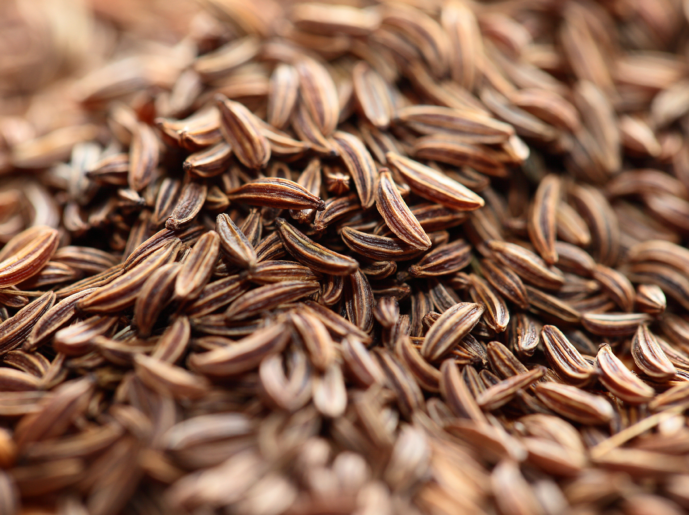

ENGLISH
1] Choose a location:
Cumin prefers a warm, sunny climate and grows best in temperatures between 20°C and 30°C.
Choose a location that receives at least 6-8 hours of sunlight per day and has well-draining soil.
2] Prepare the soil:
Cumin requires well-draining, sandy loam soil that is rich in organic matter.
Prepare the soil by tilling or digging it to a depth of at least 30 cm and adding compost or other organic
matter.
3] Plant the seeds:
Cumin is usually grown from seeds that are sown directly in the ground.
The seeds should be sown at a depth of about 1 cm and spaced at least 10 cm apart.Water the seeds gently and
keep the soil moist until the seeds germinate.
4] Water regularly:
Cumin requires regular watering to ensure healthy growth.
Water the plants regularly, especially during the dry season, but avoid overwatering as this can cause the roots
to rot.
5] Fertilize:
Cumin plants benefit from regular fertilization.
Apply a balanced fertilizer every 4-6 weeks during the growing season.
6] Control pests and diseases:
Cumin plants are susceptible to pests and diseases such as aphids,
mites, and fungal infections.Regularly inspect the plants and use organic pesticides or fungicides as
needed.
7] Harvest:
Cumin plants are ready for harvest in about 120-150 days after sowing.
The plants will start to turn brown and dry out as the seeds mature.Harvest the seeds by cutting off the
seed heads and placing them in a paper bag to dry.
ENGLISH
తెలుగు
1]ఒక స్థానాన్ని ఎంచుకోండి:
జీలకర్ర వెచ్చని, ఎండ వాతావరణాన్ని ఇష్టపడుతుంది మరియు 20°C మరియు 30°C మధ్య
ఉష్ణోగ్రతలలో ఉత్తమంగా పెరుగుతుంది.రోజుకు కనీసం 6-8 గంటల సూర్యరశ్మిని పొందే మరియు బాగా ఎండిపోయే నేల ఉన్న
ప్రదేశాన్ని ఎంచుకోండి.
2]మట్టిని సిద్ధం చేయండి:
జీలకర్రకు బాగా ఎండిపోయే, సేంద్రియ పదార్థాలు అధికంగా ఉండే ఇసుకతో కూడిన లోమ్ నేల
అవసరం.
కనీసం 30 సెంటీమీటర్ల లోతు వరకు దున్నడం లేదా త్రవ్వడం మరియు కంపోస్ట్ లేదా ఇతర సేంద్రియ పదార్థాలను జోడించడం
ద్వారా మట్టిని సిద్ధం చేయండి.
3]విత్తనాలను నాటండి:
జీలకర్ర సాధారణంగా భూమిలో నేరుగా నాటిన విత్తనాల నుండి పెరుగుతుంది.విత్తనాలను సుమారు 1
సెంటీమీటర్ల లోతులో విత్తాలి మరియు కనీసం 10 సెంటీమీటర్ల దూరంలో ఉండాలి.విత్తనాలకు మెత్తగా నీరు పోయండి మరియు
విత్తనాలు మొలకెత్తే వరకు మట్టిని తేమగా ఉంచండి.
4]క్రమం తప్పకుండా నీరు పెట్టండి:
జీలకర్ర ఆరోగ్యకరమైన పెరుగుదలను నిర్ధారించడానికి క్రమం తప్పకుండా నీరు
త్రాగుట
అవసరం.మొక్కలకు క్రమం తప్పకుండా నీరు పెట్టండి, ముఖ్యంగా ఎండా కాలంలో, కానీ వేర్లు కుళ్ళిపోయే అవకాశం ఉన్నందున
అధిక నీరు పోయకుండా ఉండండి.
5]ఎరువులు:
జీలకర్ర మొక్కలు సాధారణ ఫలదీకరణం నుండి ప్రయోజనం పొందుతాయి.పెరుగుతున్న కాలంలో ప్రతి 4-6 వారాలకు
సమతుల్య ఎరువులు వేయండి.
6]తెగుళ్లు మరియు వ్యాధులను నియంత్రించండి:
జీలకర్ర మొక్కలు తెగుళ్లు మరియు అఫిడ్స్, పురుగులు మరియు ఫంగల్
ఇన్ఫెక్షన్ల వంటి వ్యాధులకు గురవుతాయి.క్రమం తప్పకుండా మొక్కలను తనిఖీ చేయండి మరియు అవసరమైన విధంగా సేంద్రీయ
పురుగుమందులు లేదా శిలీంద్రనాశకాలను వాడండి.
7]పంట:
జీలకర్ర మొక్కలు విత్తిన 120-150 రోజులలో కోతకు సిద్ధంగా ఉంటాయి.విత్తనాలు పరిపక్వం చెందుతున్నప్పుడు
మొక్కలు గోధుమ రంగులోకి మారి ఎండిపోతాయి.విత్తన తలలను కత్తిరించి, వాటిని పొడిగా చేయడానికి కాగితపు సంచిలో ఉంచడం
ద్వారా విత్తనాలను కోయండి.
తెలుగు
వినండి
2.RED CHILLI / 2.ఎర్ర మిరపకాయ

ENGLISH
1] Choose a location:
Red chilli prefers a warm, sunny climate and grows best in temperatures between 20°C and
30°C.Choose a location that receives at least 6-8 hours of sunlight per day and has well-draining soil.
2] Prepare the soil:
Red chilli requires well-draining, fertile soil that is rich in organic matter.Prepare
the
soil by tilling or digging it to a depth of at least 30 cm and adding compost or other organic matter.
3] Plant the seeds:
Red chilli is usually grown from seeds that are sown in well-prepared soil, either directly
in
the ground or in seed trays or pots.The seeds should be sown at a depth of about 1 cm and spaced at least 30 cm
apart.Water the seeds gently and keep the soil moist until the seeds germinate.
4] Water regularly:
Red chilli requires regular watering to ensure healthy growth.Water the plants regularly,
especially during the dry season, but avoid overwatering as this can cause the roots to rot.
5] Fertilize:
Red chilli plants benefit from regular fertilization.Apply a balanced fertilizer every 4-6 weeks
during the growing season.
6] Control pests and diseases:
Red chilli plants are susceptible to pests and diseases such as aphids, mites,
and
fungal infections.Regularly inspect the plants and use organic pesticides or fungicides as needed.
7] Harvest:
Red chilli plants start producing flowers after about 45-60 days from sowing, with small white or
yellow flowers appearing at the leaf axils.The flowers are followed by small green fruit that gradually turn
red as they mature.The fruit are harvested when they reach the desired size and color, usually 70-90 days after
sowing.
8] Dry and store:
After harvesting, red chilli can be dried in the sun, oven, or dehydrator, after which they
can
be used fresh or ground into a fine powder for use as a spice in cooking.Store the dried chillies in an
airtight container in a cool, dry place until ready to use.
ENGLISH
తెలుగు
1]ఒక స్థానాన్ని ఎంచుకోండి:
ఎర్ర మిరప వెచ్చని, ఎండ వాతావరణాన్ని ఇష్టపడుతుంది మరియు 20°C మరియు 30°C మధ్య
ఉష్ణోగ్రతలలో బాగా పెరుగుతుంది.రోజుకు కనీసం 6-8 గంటల సూర్యరశ్మిని పొందే మరియు బాగా ఎండిపోయే నేల ఉన్న
ప్రదేశాన్ని ఎంచుకోండి.
2]మట్టిని సిద్ధం చేయండి:
ఎర్ర మిరపకాయకు బాగా ఎండిపోయే, సేంద్రీయ పదార్థాలు అధికంగా ఉండే సారవంతమైన నేల అవసరం.
కనీసం 30 సెంటీమీటర్ల లోతు వరకు దున్నడం లేదా త్రవ్వడం మరియు కంపోస్ట్ లేదా ఇతర సేంద్రియ పదార్థాలను జోడించడం
ద్వారా మట్టిని సిద్ధం చేయండి.
3]విత్తనాలను నాటండి:
ఎర్ర మిరపకాయను సాధారణంగా నేలలో నేరుగా లేదా సీడ్ ట్రేలు లేదా కుండలలో బాగా తయారుచేసిన
నేలలో
నాటిన విత్తనాల నుండి పండిస్తారు.విత్తనాలను సుమారు 1 సెం. మీ లోతులో విత్తాలి మరియు కనీసం 30 సెం. మీ.విత్తనాలకు
మెత్తగా నీరు పోయండి మరియు విత్తనాలు మొలకెత్తే వరకు మట్టిని తేమగా ఉంచండి.
4]క్రమం తప్పకుండా నీరు పెట్టండి:
ఎర్ర మిరపకాయకు ఆరోగ్యకరమైన పెరుగుదలను నిర్ధారించడానికి క్రమం తప్పకుండా నీరు
త్రాగుట అవసరం.మొక్కలకు క్రమం తప్పకుండా నీరు పెట్టండి, ముఖ్యంగా ఎండా కాలంలో, కానీ వేర్లు కుళ్ళిపోయే అవకాశం
ఉన్నందున అధిక నీరు పోయకుండా ఉండండి.
5]ఎరువులు వేయండి:
ఎర్ర మిరప మొక్కలు రెగ్యులర్ ఫలదీకరణం నుండి ప్రయోజనం పొందుతాయి.పెరుగుతున్న కాలంలో ప్రతి
4-6 వారాలకు సమతుల్య ఎరువులు వేయండి.
6]తెగుళ్లు మరియు వ్యాధులను నియంత్రించండి:
ఎర్ర మిరప మొక్కలు తెగుళ్లు మరియు అఫిడ్స్, పురుగులు మరియు ఫంగల్
ఇన్ఫెక్షన్ల వంటి వ్యాధులకు గురవుతాయి.క్రమం తప్పకుండా మొక్కలను తనిఖీ చేయండి మరియు అవసరమైన విధంగా సేంద్రీయ
పురుగుమందులు లేదా శిలీంద్రనాశకాలను వాడండి.
తెలుగు
వినండి
3.TURMERIC / 3.పసుపు


ENGLISH
1] Choose a location:
Turmeric prefers a warm, humid climate and grows best in temperatures between 20°C and
30°C.
It can be grown in both full sun and partial shade, but it's important to choose a location that receives
sufficient light.
2] Prepare the soil:
Turmeric requires well-drained, fertile soil that is rich in organic matter.Prepare the
soil
by tilling or digging it to a depth of at least 30 cm and adding compost or other organic matter.
3] Plant the rhizomes:
Turmeric is propagated through the division of rhizomes.Plant the rhizomes in furrows
or
pits in the soil during the rainy season.The rhizomes should be planted about 5-7 cm deep and spaced about
30-45 cm apart.
4] Water regularly:
Turmeric requires regular watering to ensure healthy growth.Water the plants regularly,
especially during the dry season, but avoid overwatering as this can cause the rhizomes to rot.
5] Control weeds:
Weeds can compete with turmeric plants for nutrients and water, so it's important to control
them
regularly.Hand-weeding or using a hoe are effective methods of weed control.
6] Fertilize:
Turmeric plants benefit from regular fertilization.Apply a balanced fertilizer every 4-6 weeks
during the growing season.
7] Harvest:
Turmeric plants reach maturity in about 8-10 months.The leaves and stems will start to yellow and
die
back, which is a sign that the rhizomes are ready for harvest.Carefully uproot the plants and dig up the
rhizomes from the soil.
8] Dry and store:
After harvesting, wash the rhizomes and boil them in water for about 45 minutes.Allow them
to
dry in the sun for several days until they are completely dry.Store the dried rhizomes in a cool, dry place
until ready to use.
ENGLISH
తెలుగు
1]ఒక స్థానాన్ని ఎంచుకోండి:
పసుపు వెచ్చని, తేమతో కూడిన వాతావరణాన్ని ఇష్టపడుతుంది మరియు 20°C మరియు 30°C మధ్య
ఉష్ణోగ్రతలలో బాగా పెరుగుతుంది.ఇది పూర్తి సూర్యుడు మరియు పాక్షిక నీడ రెండింటిలోనూ పెంచవచ్చు, అయితే తగినంత
కాంతిని పొందే స్థలాన్ని ఎంచుకోవడం చాలా ముఖ్యం.
2]మట్టిని సిద్ధం చేయండి:
పసుపుకు సేంద్రియ పదార్థాలు అధికంగా ఉండే బాగా ఎండిపోయిన, సారవంతమైన నేల అవసరం.కనీసం 30
సెంటీమీటర్ల లోతు వరకు దున్నడం లేదా త్రవ్వడం మరియు కంపోస్ట్ లేదా ఇతర సేంద్రియ పదార్థాలను జోడించడం ద్వారా
మట్టిని సిద్ధం చేయండి.
3]రైజోమ్లను నాటండి:
పసుపును రైజోమ్ల విభజన ద్వారా ప్రచారం చేస్తారు.వర్షాకాలంలో నేలలో సాళ్లలో లేదా గుంటలలో
రైజోమ్లను నాటండి.రైజోమ్లను 5-7 సెంటీమీటర్ల లోతులో మరియు 30-45 సెంటీమీటర్ల దూరంలో నాటాలి.
4]క్రమం తప్పకుండా నీరు:
పసుపు ఆరోగ్యకరమైన పెరుగుదలను నిర్ధారించడానికి క్రమం తప్పకుండా నీరు త్రాగుట అవసరం.
మొక్కలకు క్రమం తప్పకుండా నీరు పెట్టండి, ముఖ్యంగా పొడి కాలంలో, కానీ అధిక నీరు పోయకుండా ఉండండి, ఇది రైజోమ్లు
కుళ్ళిపోయేలా చేస్తుంది.
5]కలుపు మొక్కలను నియంత్రించండి:
కలుపు మొక్కలు పోషకాలు మరియు నీటి కోసం పసుపు మొక్కలతో పోటీపడగలవు, కాబట్టి వాటిని
క్రమం తప్పకుండా నియంత్రించడం చాలా ముఖ్యం.కలుపు నివారణకు చేతితో కలుపు తీయడం లేదా గడ్డిని ఉపయోగించడం అనేది
సమర్థవంతమైన పద్ధతులు.
6]ఎరువులు:
పసుపు మొక్కలు సాధారణ ఫలదీకరణం నుండి ప్రయోజనం పొందుతాయి.పెరుగుతున్న కాలంలో ప్రతి 4-6 వారాలకు సమతుల్య
ఎరువులు వేయండి.
7]పంట:
పసుపు మొక్కలు దాదాపు 8-10 నెలల్లో పక్వానికి చేరుకుంటాయి.ఆకులు మరియు కాండం పసుపు రంగులోకి మారడం మరియు
తిరిగి చనిపోతాయి, ఇది రైజోమ్లు కోతకు సిద్ధంగా ఉన్నాయని సంకేతం.మొక్కలను జాగ్రత్తగా పెకిలించి, నేల నుండి
రైజోమ్లను త్రవ్వండి.
8]ఎండబెట్టి నిల్వ చేయండి:
పంట కోసిన తర్వాత, రైజోమ్లను కడగాలి మరియు నీటిలో సుమారు 45 నిమిషాలు ఉడకబెట్టండి.అవి
పూర్తిగా ఆరిపోయే వరకు చాలా రోజులు ఎండలో ఆరనివ్వండి.ఎండిన రైజోమ్లను ఉపయోగించడానికి సిద్ధంగా ఉన్నంత వరకు
చల్లని, పొడి ప్రదేశంలో నిల్వ చేయండి.
తెలుగు
వినండి
4.POPPY SEEDS / 4.గసగసాలు

ENGLISH
1] Choose the right location:
Sesame plants need a warm, sunny climate to grow well.They prefer a location with
well-drained soil and full sun.
2] Prepare the soil:
Sesame plants grow best in soil that is slightly acidic and well-drained.You can prepare the
soil by adding compost or well-rotted manure before planting.
3] Plant the seeds:
Sesame seeds should be planted in rows or broadcast across the soil surface.Plant the seeds
about 1/2 inch deep and 2-3 inches apart.
4] Water regularly:
Sesame plants need regular watering to grow.Water the plants deeply once or twice a week,
depending on the weather.
5] Fertilize:
Sesame plants do not require a lot of fertilizer, but you can apply a balanced fertilizer once a
month to promote growth.
6] Weed control:
Sesame plants are susceptible to weed competition, so it is important to keep the area around the
plants free of weeds.
7] Harvest:
Sesame seeds are ready for harvest when the seed pods turn brown and start to crack open.The seeds can
be harvested by cutting the seed pods from the plant and threshing the seeds from the pods.The seeds can be
used immediately or dried for later use.
ENGLISH
తెలుగు
1] సరైన స్థలాన్ని ఎంచుకోండి:
నువ్వుల మొక్కలు బాగా పెరగడానికి వెచ్చని, ఎండ వాతావరణం అవసరం. వారు బాగా ఎండిపోయిన నేల
మరియు పూర్తి ఎండ ఉన్న ప్రదేశాన్ని ఇష్టపడతారు.
2] మట్టిని సిద్ధం చేయండి:
నువ్వులు కొద్దిగా ఆమ్లత్వం మరియు బాగా ఎండిపోయిన నేలలో బాగా పెరుగుతాయి. మీరు నాటడానికి
ముందు కంపోస్ట్ లేదా బాగా కుళ్ళిన ఎరువును జోడించడం ద్వారా మట్టిని సిద్ధం చేయవచ్చు.
3] విత్తనాలను నాటండి:
నువ్వులను వరుసలలో నాటాలి లేదా నేల ఉపరితలం అంతటా ప్రసారం చేయాలి. విత్తనాలను 1/2 అంగుళాల లోతు
మరియు 2-3 అంగుళాల దూరంలో నాటండి.
4] క్రమం తప్పకుండా నీరు పెట్టండి:
నువ్వులు పెరగడానికి క్రమం తప్పకుండా నీరు త్రాగుట అవసరం. వాతావరణాన్ని బట్టి
వారానికి ఒకటి లేదా రెండుసార్లు మొక్కలకు లోతుగా నీరు పెట్టండి.
5] ఎరువులు వేయండి:
నువ్వుల మొక్కలకు ఎరువులు చాలా అవసరం లేదు, కానీ మీరు పెరుగుదలను ప్రోత్సహించడానికి నెలకు ఒకసారి
సమతుల్య ఎరువులు వేయవచ్చు.
6] కలుపు నివారణ:
నువ్వుల మొక్కలు కలుపు పోటీకి గురవుతాయి, కాబట్టి మొక్కల చుట్టూ కలుపు మొక్కలు లేకుండా ఉంచడం చాలా
ముఖ్యం.
7] హార్వెస్ట్:
గింజలు గోధుమ రంగులోకి మారినప్పుడు మరియు పగుళ్లు రావడం ప్రారంభించినప్పుడు నువ్వులు కోతకు సిద్ధంగా
ఉంటాయి. మొక్క నుండి గింజలను కోసి, గింజలను నూర్పిడి చేయడం ద్వారా విత్తనాలను పండించవచ్చు. విత్తనాలను వెంటనే
ఉపయోగించవచ్చు లేదా తరువాత ఉపయోగం కోసం ఎండబెట్టవచ్చు.
తెలుగు
వినండి
5.Sesame Seeds / 5.నువ్వు గింజలు
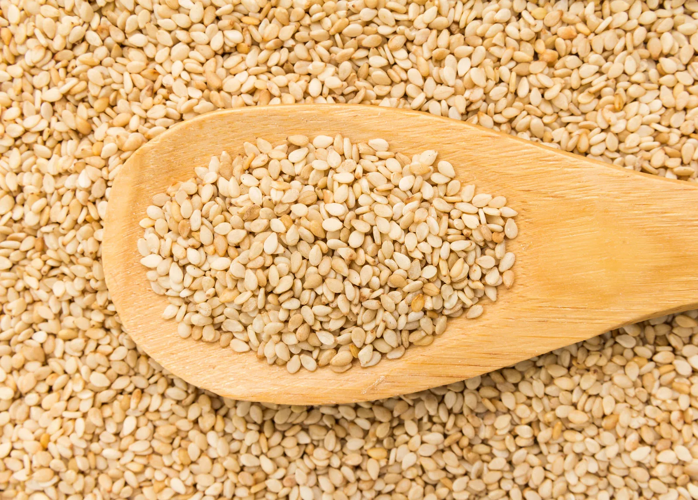

ENGLISH
1] Choose the right location:
Sesame plants need a warm, sunny climate to grow well.They prefer a location with
well-drained soil and full sun.
2] Prepare the soil:
Sesame plants grow best in soil that is slightly acidic and well-drained.You can prepare the
soil by adding compost or well-rotted manure before planting.
3] Plant the seeds:
Sesame seeds should be planted in rows or broadcast across the soil surface.Plant the seeds
about 1/2 inch deep and 2-3 inches apart.
4] Water regularly:
Sesame plants need regular watering to grow.Water the plants deeply once or twice a week,
depending on the weather.
5] Fertilize:
Sesame plants do not require a lot of fertilizer, but you can apply a balanced fertilizer once a
month to promote growth.
6] Weed control:
Sesame plants are susceptible to weed competition, so it is important to keep the area around the
plants free of weeds.
7] Harvest:
Sesame seeds are ready for harvest when the seed pods turn brown and start to crack open.The seeds can
be harvested by cutting the seed pods from the plant and threshing the seeds from the pods.The seeds can be
used immediately or dried for later use.
ENGLISH
తెలుగు
1] సరైన స్థలాన్ని ఎంచుకోండి:
నువ్వుల మొక్కలు బాగా పెరగడానికి వెచ్చని, ఎండ వాతావరణం అవసరం.వారు బాగా ఎండిపోయిన నేల
మరియు పూర్తి ఎండ ఉన్న ప్రదేశాన్ని ఇష్టపడతారు.
2] మట్టిని సిద్ధం చేయండి:
నువ్వులు కొద్దిగా ఆమ్లత్వం మరియు బాగా ఎండిపోయిన నేలలో బాగా పెరుగుతాయి.మీరు నాటడానికి
ముందు కంపోస్ట్ లేదా బాగా కుళ్ళిన ఎరువును జోడించడం ద్వారా మట్టిని సిద్ధం చేయవచ్చు.
3] విత్తనాలను నాటండి:
నువ్వులను వరుసలలో నాటాలి లేదా నేల ఉపరితలం అంతటా ప్రసారం చేయాలి.విత్తనాలను 1/2 అంగుళాల లోతు
మరియు 2-3 అంగుళాల దూరంలో నాటండి.
4] క్రమం తప్పకుండా నీరు పెట్టండి:
నువ్వులు పెరగడానికి క్రమం తప్పకుండా నీరు త్రాగుట అవసరం.వాతావరణాన్ని బట్టి
వారానికి ఒకటి లేదా రెండుసార్లు మొక్కలకు లోతుగా నీరు పెట్టండి.
5] ఎరువులు వేయండి:
నువ్వుల మొక్కలకు ఎరువులు చాలా అవసరం లేదు, కానీ మీరు పెరుగుదలను ప్రోత్సహించడానికి నెలకు ఒకసారి
సమతుల్య ఎరువులు వేయవచ్చు.
6] కలుపు నివారణ:
నువ్వుల మొక్కలు కలుపు పోటీకి గురవుతాయి, కాబట్టి మొక్కల చుట్టూ కలుపు మొక్కలు లేకుండా ఉంచడం చాలా
ముఖ్యం.
తెలుగు
వినండి
6.CORIANDER / 6.కొత్తిమీర


ENGLISH
1] Choose a location:
Coriander prefers a cool, sunny climate and grows best in temperatures between 10°C and 25°C.
Choose a location that receives partial shade in hotter climates and full sun in cooler climates.
2] Prepare the soil:
Coriander requires well-draining, fertile soil that is rich in organic matter.Prepare the
soil by tilling or digging it to a depth of at least 30 cm and adding compost or other organic matter.
3] Plant the seeds:
Coriander is usually grown from seeds that are sown directly in the ground.The seeds should be
sown at a depth of about 1 cm and spaced at least 15 cm apart.Water the seeds gently and keep the soil moist
until the seeds germinate.
4] Water regularly:
Coriander requires regular watering to ensure healthy growth.Water the plants regularly,
especially during the dry season, but avoid overwatering as this can cause the roots to rot.
5] Fertilize:
Coriander plants benefit from regular fertilization.Apply a balanced fertilizer every 4-6 weeks
during the growing season.
6] Control pests and diseases:
Coriander plants are susceptible to pests and diseases such as aphids, mites, and
fungal infections.Regularly inspect the plants and use organic pesticides or fungicides as needed.
7] Harvest:
Coriander plants are ready for harvest in about 40-50 days after sowing.The leaves can be harvested as
soon as they are large enough to use, and the seeds can be harvested when they turn brown and start to fall off
the plant.Harvest the seeds by cutting off the seed heads and placing them in a paper bag to dry.
8] Dry and store:
After harvesting, coriander can be dried in the sun or a dehydrator, after which the seeds can be
stored in an airtight container in a cool, dry place until ready to use.The leaves can also be dried and stored
or used fresh in cooking.
ENGLISH
తెలుగు
1] ఒక స్థానాన్ని ఎంచుకోండి:
కొత్తిమీర చల్లని, ఎండ వాతావరణాన్ని ఇష్టపడుతుంది మరియు 10°C మరియు 25°C
మధ్య ఉష్ణోగ్రతలలో బాగా పెరుగుతుంది.వేడి వాతావరణంలో పాక్షిక నీడను మరియు చల్లటి వాతావరణంలో పూర్తి ఎండను పొందే
స్థానాన్ని ఎంచుకోండి.
2] మట్టిని సిద్ధం చేయండి:
కొత్తిమీరకు బాగా ఎండిపోయే, సేంద్రీయ పదార్థాలు అధికంగా ఉండే సారవంతమైన నేల అవసరం.కనీసం
30 సెంటీమీటర్ల లోతు వరకు దున్నడం లేదా త్రవ్వడం మరియు కంపోస్ట్ లేదా ఇతర సేంద్రీయ పదార్థాలను జోడించడం ద్వారా
మట్టిని సిద్ధం చేయండి.
3] విత్తనాలను నాటండి:
కొత్తిమీరను సాధారణంగా భూమిలో నేరుగా నాటిన విత్తనాల నుండి పండిస్తారు.విత్తనాలను సుమారు 1
సెం.
మీ లోతులో విత్తాలి మరియు కనీసం 15 సెం.
మీ.విత్తనాలకు మెత్తగా నీరు పోయండి మరియు విత్తనాలు మొలకెత్తే వరకు
మట్టిని తేమగా ఉంచండి.
4] క్రమం తప్పకుండా నీరు పెట్టండి:
కొత్తిమీర ఆరోగ్యకరమైన పెరుగుదలను నిర్ధారించడానికి క్రమం తప్పకుండా నీరు త్రాగుట
అవసరం.మొక్కలకు క్రమం తప్పకుండా నీరు పెట్టండి, ముఖ్యంగా ఎండా కాలంలో, కానీ వేర్లు కుళ్ళిపోయే అవకాశం ఉన్నందున
అధిక నీరు పోయకుండా ఉండండి.
5] ఎరువులు:
కొత్తిమీర మొక్కలు క్రమం తప్పకుండా ఎరువులు వేయడం వల్ల ప్రయోజనం పొందుతాయి.పెరుగుతున్న కాలంలో ప్రతి 4-6
వారాలకు సమతుల్య ఎరువులు వేయండి.
6] తెగుళ్లు మరియు వ్యాధులను నియంత్రించండి:
కొత్తిమీర మొక్కలు తెగుళ్లు మరియు అఫిడ్స్, పురుగులు మరియు ఫంగల్
ఇన్ఫెక్షన్ల వంటి వ్యాధులకు గురవుతాయి.క్రమం తప్పకుండా మొక్కలను తనిఖీ చేయండి మరియు అవసరమైన విధంగా సేంద్రీయ
పురుగుమందులు లేదా శిలీంద్రనాశకాలను వాడండి.
7] కోత:
కొత్తిమీర మొక్కలు విత్తిన 40-50 రోజులలో కోతకు సిద్ధంగా ఉంటాయి.ఆకులు వాడడానికి తగినంత పెద్దవి అయిన వెంటనే
కోయవచ్చు మరియు విత్తనాలు గోధుమ రంగులోకి మారినప్పుడు మరియు మొక్క నుండి రాలిపోవడం ప్రారంభించినప్పుడు వాటిని
కోయవచ్చు.విత్తన తలలను కత్తిరించి, వాటిని పొడిగా చేయడానికి కాగితపు సంచిలో ఉంచడం ద్వారా విత్తనాలను
కోయండి.
8] ఎండబెట్టి నిల్వ చేయండి:
కోత తర్వాత, కొత్తిమీరను ఎండలో లేదా డీహైడ్రేటర్లో ఎండబెట్టవచ్చు, ఆ తర్వాత విత్తనాలను
గాలి చొరబడని కంటైనర్లో చల్లని, పొడి ప్రదేశంలో ఉపయోగించడానికి సిద్ధంగా ఉండే వరకు నిల్వ చేయవచ్చు.ఆకులను
ఎండబెట్టి నిల్వ చేయవచ్చు లేదా వంటలో తాజాగా ఉపయోగించవచ్చు.
తెలుగు
వినండి
7.CINNAMON / 7.దాల్చిన చెక్క

ENGLISH
1] Choose the right location:
Cinnamon trees need a warm, humid climate to grow well.They prefer a
location with
partial shade and protection from strong winds.
2] Prepare the soil:
Cinnamon trees grow best in well-drained soil that is rich in organic matter.You can
prepare
the soil by adding compost or well-rotted manure before planting.
3] Propagate the plant:
Cinnamon trees are propagated by seeds or cuttings.If you choose to propagate by
seeds, it
is important to use fresh seeds that have not dried out.
4] Provide shade:
Young cinnamon trees need shade to grow.You can provide shade by planting other trees
or
installing shade cloth.
5] Water regularly:
Cinnamon trees need regular watering to grow.Water the plants deeply once or twice a
week,
depending on the weather.
6] Fertilize:
Cinnamon trees respond well to fertilizer.You can apply a balanced fertilizer once a month
or use a
foliar spray of fish emulsion or seaweed extract.
7] Prune:
Cinnamon trees need regular pruning to maintain their shape and promote growth.
8] Harvest:
Cinnamon bark is harvested by cutting off the branches of the tree and peeling off the outer
bark.The
inner bark is then stripped off and dried in the sun or in a drying machine before being processed and sold.
ENGLISH
తెలుగు
1]సరైన స్థలాన్ని ఎంచుకోండి:
దాల్చినచెక్కలు బాగా పెరగడానికి వెచ్చని, తేమతో కూడిన వాతావరణం అవసరం.వారు
బలమైన గాలుల
నుండి పాక్షిక నీడ మరియు రక్షణ ఉన్న ప్రదేశాన్ని ఇష్టపడతారు.
2]మట్టిని సిద్ధం చేయండి:
దాల్చినచెక్క సేంద్రియ పదార్థాలు అధికంగా ఉండే బాగా ఎండిపోయిన నేలలో బాగా
పెరుగుతాయి.మీరు
నాటడానికి ముందు కంపోస్ట్ లేదా బాగా కుళ్ళిన ఎరువును జోడించడం ద్వారా మట్టిని సిద్ధం చేయవచ్చు.
3]మొక్కను ప్రచారం చేయండి:
దాల్చినచెక్కను విత్తనాలు లేదా కోత ద్వారా ప్రచారం చేస్తారు.మీరు విత్తనాల
ద్వారా
ప్రచారం చేయాలని ఎంచుకుంటే, ఎండిపోని తాజా విత్తనాలను ఉపయోగించడం ముఖ్యం.
4] నీడను అందించండి:
యువ దాల్చినచెట్లు పెరగడానికి నీడ అవసరం.మీరు ఇతర చెట్లను నాటడం ద్వారా లేదా నీడ
వస్త్రాన్ని
అమర్చడం ద్వారా నీడను అందించవచ్చు.
5]క్రమం తప్పకుండా నీరు పెట్టండి:
దాల్చినచెక్కలు పెరగడానికి క్రమం తప్పకుండా నీరు త్రాగుట అవసరం.
వాతావరణాన్ని
బట్టి వారానికి ఒకటి లేదా రెండుసార్లు మొక్కలకు లోతుగా నీరు పెట్టండి.
6]ఎరువులు:
దాల్చినచెక్కలు ఎరువులకు బాగా స్పందిస్తాయి.మీరు నెలకోసారి సమతుల్య ఎరువులు వేయవచ్చు లేదా చేపల
ఎమల్షన్
లేదా సీవీడ్ సారం యొక్క ఫోలియర్ స్ప్రేని ఉపయోగించవచ్చు.
7] ప్రూనే:
దాల్చినచెక్కలు వాటి ఆకారాన్ని కాపాడుకోవడానికి మరియు పెరుగుదలను ప్రోత్సహించడానికి క్రమం
తప్పకుండా
కత్తిరించడం అవసరం.
8] హార్వెస్ట్:
దాల్చిన చెక్క బెరడు చెట్టు కొమ్మలను నరికి, బయటి బెరడును తీయడం ద్వారా పండిస్తారు.ప్రాసెస్
చేసి
విక్రయించే ముందు లోపలి బెరడును తీసివేసి ఎండలో లేదా ఎండబెట్టే యంత్రంలో ఎండబెట్టాలి.
2ఈ దశలను అనుసరించడం ద్వారా, మీరు ఆరోగ్యకరమైన మరియు అందమైన జిన్నియాలను పెంచుకోవచ్చు.అదృష్టం!
తెలుగు
వినండి
8.ALL SPICE PLANT / 8.అల్స్పైస్ చిట్కాల వృద్ధి మెకానిజం
 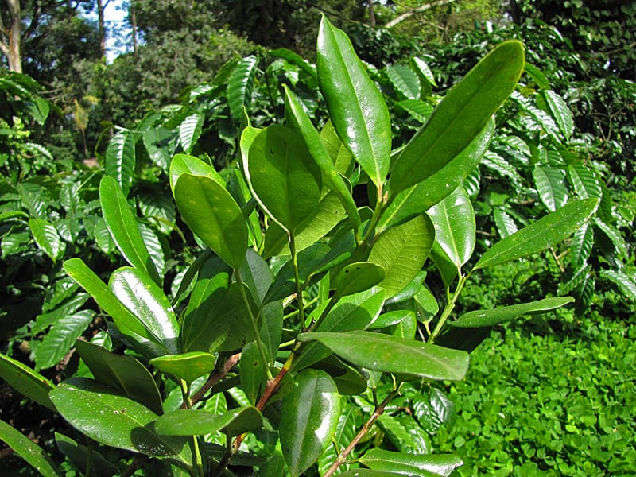
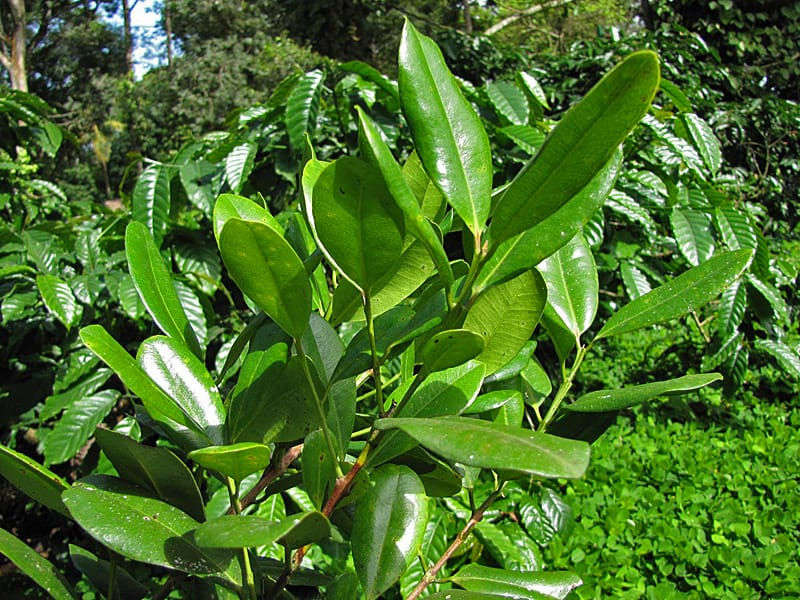
ENGLISH
1] choose a Location:
Allspice plants (Pimenta dioica) thrive in warm, tropical climates.Choose a location with
well-draining soil and partial shade.
2] Soil Preparation:
Prepare the soil by adding organic matter such as compost.Allspice plants prefer
slightly
acidic to neutral soil.
seedling in the hole.
3] Watering:
Keep the soil consistently moist but not waterlogged.Allspice plants prefer regular watering.
4] Mulching:
Apply a layer of mulch around the base of the plant to retain moisture and suppress weeds.
5] Fertilization:
Fertilize the plant with a balanced fertilizer during the growing season.Follow package
instructions for application rates.
6] Pruning:
Prune the plant to shape it and remove dead or diseased branches.This can be done to encourage
bushier
growth.
7] Harvesting:
Allspice berries are typically ready for harvest when they turn from green to a mature,
reddish-brown color.Harvest the berries by handpicking or cutting the stems.
8] Drying:
Allow the harvested berries to dry in a well-ventilated area.Dried berries can be stored for
later use.
ENGLISH
తెలుగు
1] స్థలం ఎంచుకోవడం:
అల్స్పైస్ చిట్కాలు (Pimenta dioica) ఉష్ణవాతావరణాల్లో బాగా పొడిగించిపోతాయి.మణిచేత
ఉండటానికి
ఒక స్థలం ఎంచుకోండి.
2] మణుపు సాక్షరత:
కానిమార్గం చేత మణుపు సాక్షరత చేయడం ద్వారా మణుపునానికి అన్నివి చేసుకోండి.అల్స్పైస్
చిట్కాలు
స్లైట్లీ ఆసిడిక్ నుండి న్యూట్రల్ మణుపును ఆకర్షించడం ప్రముఖం.
3] విత్తనం:
అల్స్పైస్ విత్తనాన్ని నేలలో సీధా విత్తాలి.విత్తనాన్ని నీటిలో ఒక రోజు నేరుకున్నాక పెద్దకాయ
కాకుండా
ప్రకాశం పొందాలి.
4]మొక్కలు:
న్యూసరీ నుండి ఖరీదుచేసిన మొక్కలను విత్తనానికి ఇవాళ్లకు చెయ్యవచ్చు.విత్తనానికి గడపడి యిత్రం
కావాలనుకుంటే దోరగాల మీద స్థానానికి పెట్టండి.
5]నీటిపాని:
మణుపు నిరంతరం నియమితంగా ఊక్షాదాయకంగా ఉండాలి.అల్స్పైస్ చిట్కాలు నియమిత నీటి అవసానానికి ఇష్టపడుతాయి.
6] మల్చింగ్:
మొక్కను చాలానేమి అయితే చెంచాలి.నీటిని ధరించడానికి మరియు కలుపులను నివారించడానికి
మల్చించండి.
7]ఆకులు:
వృద్ధికి అనుమతించడానికి విత్తనానికి అంతకంటి అంగాలను తొలగించండి.
8] పరిపాలన:
చిట్కాలను రూపొచ్చడానికి మరియు చిట్కలు సావారి వల్లంగా తొలగించడానికి అతనిచేత అవసరమయ్యాలి.
9] పంట కట్టడం:
అల్స్పైస్ చిట్కాలు ఆకర్షణాత్మకంగా కాకుండా ఎండగా ఉండాలి.అవసరం కాని మంచి ప్రకారంలో
ఆకాశానంతా
కాకుండా కట్టడం చేయాలి.
10] అంగడాలు:
ఆల్స్పైస్ కిటికీ పెద్దకాయ నుండి చిరగా మారిపోయాక బయటపడుతూ ఉండాలి.అంగడాలను ఒక మొక్క
చేయించడానికి మీకు
ఆవిర్భావం అయితే కొనుగోలు చేయండి. నేలలో వెయిరేషన్డిలిటెడ్ ప్రదేశంలో అల్స్పైస్ బెరీలు ప్రాముక్యం పొందిపోతాయి.కొనుగోలును
హస్తంగా కూడా వాడిపోయిందాక అలాంటి గ్రామ్యాలకు వాడవచ్చినందున హస్తంగా కొనుగోలును హత్యచేయలేదు.
తెలుగు
వినండి
9.AJWAIN / 9.అజ్వైన్
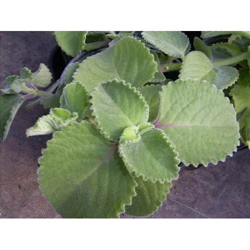

ENGLISH
1] Selecting a Location:
Ajwain plants (Trachyspermum ammi) prefer well-draining soil and thrive in full
sun.
2] Soil Preparation:
Prepare the soil by adding organic matter, and ensure it has good drainage.
3] Planting Ajwain Seeds:
Sow Ajwain seeds directly in the soil or in seed trays, covering them lightly with soil.
Maintain a spacing of about 15-20 cm between plants.
4] Watering:
Keep the soil consistently moist but avoid waterlogging.Ajwain plants do not tolerate waterlogged
conditions.
5] Sunlight:
Ajwain plants require full sunlight for optimal growth.
6] Thinning:
Thin out seedlings if they are too crowded, leaving the strongest ones to grow.
7] Fertilization:
Ajwain plants do not typically require heavy fertilization.Adding well-rotted compost
during
planting is usually sufficient.
8] Harvesting:
Ajwain leaves and seeds are both edible.Leaves can be harvested once the plant is
established, and
seeds can be collected when they turn brown.
9] Pruning:
Prune the plant to encourage bushier growth and to harvest leaves without damaging the plant.
10] Drying Ajwain Seeds:
To store Ajwain seeds, allow them to dry thoroughly in a shaded, well-ventilated
area
before storing.
ENGLISH
తెలుగు
1]స్థలం ఎంచుకోవడం:
అజ్వైన్ మొక్కలు (Trachyspermum ammi) మంచి నీరు పొందేంత భూమిని ఆకర్షించిపోతాయి మరియు
పూర్తి సూర్యప్రకాశంలో పెరగాలి.
2]మణుపు సాక్షరత:
భూమిని సాక్షరత చేయడానికి జైవ పదార్ధాలను జోడించండి, మరియు అది నలుగురు ఉండేంత ఉండాలి.
3] అజ్వైన్ విత్తనాలు:
అజ్వైన్ విత్తనాలను నేలలో లేదా విత్తన ట్రేల్లులో నానాబారాకు విత్తండి, అవినానికి భూమిని తగ్గించిపెట్టండి.
మొక్కల మధ్యలో సమితీ గాని 15-20 సెంటీమీటర్ల దూరం ఉండాలి.
4] నీటిపాని:
భూమిని నిరంతరం ఊక్షాదాయకంగా ఉండాలి కాని ఊగింకలేకపోతే బాగా పొంగిపోతాయి.
5] సూర్యప్రకాశం:
అజ్వైన్ మొక్కలు పూర్తి అభివృద్ధికి పూర్తి సూర్యప్రకాశం అవసరం.
6] తిప్పడం:
విత్తనాలు అనేకంగా కనిపిస్తే, విత్తనాలను రెండవి అంగమున చేర్చాలి.
7] ఉర్వరించడం:
ఆమెతో బాగా సంబంధం ఉన్నప్పుడు అంగ
తెలుగు
వినండి
10.BLACK PEPPER / 10.నల్లమిరియాలు
 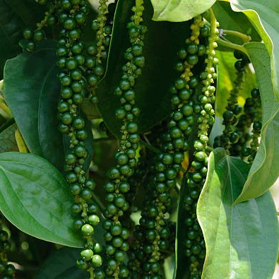
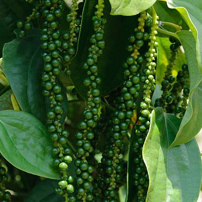
ENGLISH
1] Growing Regions in India:
Kerala:
Known for Malabar pepper, one of the finest varieties.
Karnataka:
Major producer, especially in regions like Coorg.
Tamil Nadu:
Grows black pepper in the Western Ghats.
Andhra Pradesh:
Cultivates black pepper in certain regions.
2] Climatic Requirements:
Black pepper thrives in hot and humid tropical climates.
Requires well-distributed rainfall throughout the year.
3] Cultivation and Plant Characteristics:
Black pepper is a climbing vine that requires support for vertical growth.
The plant bears small white flowers that develop into berries known as peppercorns.
4] Harvesting:
Peppercorns are harvested when they are still green but mature.
Immature green peppercorns are used for green pepper, while mature ones turn black after drying.
5] Processing:
The harvested peppercorns are usually sun-dried to achieve their characteristic black color.
The outer layer shrinks during drying, resulting in wrinkled, dark brown to black peppercorns.
6] Varieties:
Malabar Pepper:
Renowned for its bold and aromatic flavor, grown mainly in Kerala.
Tellicherry Pepper:
A high-quality variety with larger and more mature berries.
7] Flavor Profile:
Black pepper has a pungent and mildly spicy flavor.
It is a versatile spice used in various cuisines worldwide.
8] Medicinal Uses:
Black pepper is believed to have digestive properties and is used in traditional medicine.
Piperine, the compound responsible for its pungency, is studied for potential health benefits.
9] Culinary Uses:
Widely used in Indian cooking, both in whole and ground form.
Adds flavor to a variety of dishes, including curries, marinades, and spice blends.
10] Global Trade:
India is a leading exporter of black pepper, contributing significantly to the global spice market.
ENGLISH
తెలుగు
1] భూమిలో పరిసరాలు ఇండియాలో:
కేరళ:మలబార్ మిరియాల కోసం ప్రముఖమైన ప్రదేశం.
కర్ణాటక:కೂర్గ్ ఉండానికి ప్రధాన ఉత్పాదకం.
తమిళనాడు:పశ్చిమ ఘాట్స్ లో నల్లమిరియాల వళ్ళకి బూతులు.
ఆంధ్రప్రదేశ్:కొన్ని ప్రాంతాలలో నల్లమిరియాల విత్తనం.
2]జలవాయు అవసరాలు:
నల్లమిరియాలు ఉష్ణ మరియు ఆర్ద్ర ట్రాపికల్ జలవాయు అవసరాలు ఉన్నాయి.
సంవత్సరంలో ప్రసరించిన వరకు విత్తనం అవసరం.
3]విత్తనం మరియు వనరకాలం:
నల్లమిరియాలు ఉన్నటికీ ఎత్తి ఉండాలి.
మరియు ఆకులందరికి మంచి బూతులున్న చిన్న తెల్లని పుష్పాలు అవుతాయి, అవి పెప్పర్కార్న్లా అంటారు.
4]తేలికాబట్టలు:
పెప్పర్కార్న్లు ఆకటికి హరితంగా ఆయన కర్ణాలను అంగడాలలో పొందాలి.
పెప్పర్కార్న్లు ఆకటికి హరితంగా ఆయన కర్ణాలను అంగడాలలో పొందిపోతాయి.
ప్
5]రస్సెసింగ్:
విత్తనాలను సామాన్యంగా ముగిసేంత వరకు సూర్యనికి పెట్టి నల్లమిరియాలు అంటారు.
విత్తనానికి అంతరిక్షం చిగుకుటను నిర్వహించాక నల్లమిరియాలు కరిగిపోతాయి.
6]వివిధాలు:
7] మలబార్ మిరియాలు:
అతి అందంగా ఉన్నంతకు ప్రసిద్ధమైన ఒక రకం.
8]తెల్లిచెర్రీ మిరియాలు:
పెప్పర్కార్న్లలో పెద్ద మరియు అందంగా ఉన్న ఒక ఆకర్షణీయ రకం.
9]రుచి వివరణ:
నల్లమిరియాలు ఒక పికాంత మరియు తేనెకరిగా ఉంటాయి.
ఇది వివిధ విభాగాలలో ఉపయోగించబడు
తెలుగు
వినండి
11.LONG PEPPER / 11.ఉష్ణకాటి (పిప్పలి)


ENGLISH
1] Selecting a Location:
Long pepper plants thrive in tropical climates with well-distributed rainfall.
Choose a location with partial shade to full sun for optimal growth.
2] Soil Preparation:
Prepare well-draining soil enriched with organic matter.
Long pepper prefers slightly acidic to neutral soil.
3] Planting Long Pepper:
Plant long pepper in rows or on a trellis to provide support for the vines.
Space the plants about 1 to 2 meters apart.
4] Watering:
Long pepper requires consistent moisture, especially during the growing season.
Avoid waterlogging, as it can lead to root rot.
5] Support Structures:
Long pepper vines are climbing plants and need support structures to grow vertically.
Install trellises or stakes for the vines to cling to.
6] Training the Vines:
Train the vines to climb the support structures to encourage upward growth.
This helps in better air circulation and sunlight exposure.
7] Pruning:
Prune the vines regularly to promote bushier growth and to control the size of the plant.
Remove any dead or diseased parts.
8] Harvesting:
Long pepper spikes are ready for harvest when they become firm and start changing color.
Harvest by cutting the spikes carefully to avoid damaging the plant.
9] Drying:
Sun-dry the harvested long pepper spikes until they become hard and wrinkled.
The drying process enhances the flavor and aroma.
10] Storage:
Store dried long pepper in airtight containers in a cool, dark place.
Proper storage helps retain the spice's quality.
ENGLISH
తెలుగు
1] స్థలం ఎంచుకోవడం:
పిప్పలి మొక్కలు పూర్తి సూర్యకాంత పరిసరాల్లో బాగా పెరగిపోతాయి.
సరిహద్దును కాయించడానికి పాత్రను పరిగణించండి.
2] భూమి సజీవీకరణ:
జైవాణిక వస్తువులతో శోధించబడిన నీటి నిర్వహించడానికి భూమిని సజీవీకరించండి.
స్లైట్లీ అమ్లానికి నేచురల్ భూమిని ఎంచుకోండి.
3] ఉష్ణకాటి విత్తనం:
పిప్పలిను వర్గాల్లలో లేదా ట్రెలిస్ పై విత్తనం చేయండి.
మొక్కలను 1 నుండి 2 మీటర్ల దూరంగా నెలపెట్టండి.
4] నీటిపాని:
పిప్పలికి ఆర్ద్రత ప్రదానం కావాలి, ప్రతిసారిగా పొడిగించాలి.
వెడల్పు రొట్కు వచ్చినప్పుడు వెడల్పుపోతాయి.
5] మద్దతికలు:
పిప్పలి మొక్కలను ఉష్ణకాటికి గానివాడిగా ఆకుల గర్భంలో పెట్టాలి.
అవి కఠినంగా మరియు కొవ్వినండిగా కానివాడిగా మారిపోతాయి.
6] రుచి వివరణ:
పిప్పలికి ఒక విశిష్ట రుచి వివరణ ఉంది, అతని రుచిని అనేకంగా పికాంతం మరియు స్వీట్నెస్ యొక్క సూచన తో
వివరిస్తారు.
ఇది నల్లమిరియాలని పట్టుబడి చేసేంత కాని మరియు ప్రాణాన్ని ఇస్తుంది.
7] ఔషధ పరిశోధనలు:
పిప్పలిని ఆయుర్వేద వైద్యశాస్త్రంలో అంగీకరించడానికి వినండి.
ఇది జఠరాగ్ని మరియు శోథం నివారణలకు ఉపయోగించబడుతుంది.
8] వాణిజ్యం యొక్క ఉపయోగాలు:
బ్లాక్ పెప్పర్ అంటే అందరికీ అర్థంగా, పిప్పలి కొనసాగుతుంది.
నిర్వహించడానికి వాడికి అవసరమైన అన్ని నాన్విడ్ ఆకులు మరియు చందనం ఉన్నాయి.
9] అభిరక్షణ:
ఉష్ణకాటి పిప్పలిని గ్యాస్టిక్ స్థానంలో దంపతు
తెలుగు
వినండి
12.KALONJI / 12.కలోంజీ
 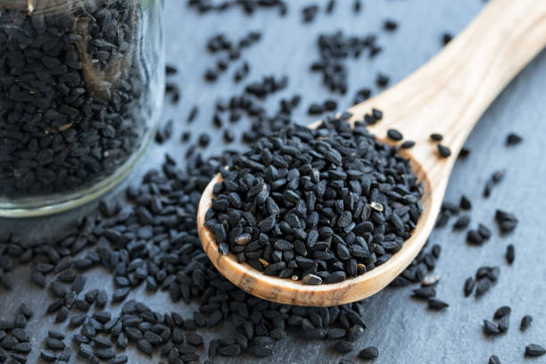
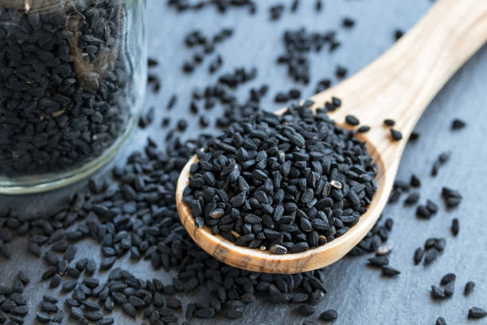
ENGLISH
1] Selecting a Location:
Kalonji grows well in warm climates with full sunlight.
Choose a well-drained location with sandy-loam soil.
2] Soil Preparation:
Prepare the soil by adding organic matter.
Kalonji prefers slightly alkaline to neutral soil.
3] Planting Kalonji:
Sow Kalonji seeds directly into the soil or in seed trays.
Space the seeds or seedlings about 15 to 20 centimeters apart.
4] Watering:
Provide regular watering, especially during the germination and flowering stages.
Once established, Kalonji is somewhat drought-tolerant.
5] Thinning and Transplanting:
Thin out seedlings to maintain proper spacing.
Transplant seedlings to their final location once they are sturdy enough.
6] Flowering and Seed Formation:
Kalonji plants produce delicate blue flowers.
After flowering, seed capsules develop, containing numerous small black seeds.
7] Harvesting Seeds:
Harvest Kalonji seeds when the seed capsules turn yellowish-brown.
Cut the seed heads and allow them to dry before extracting the seeds.
8] Drying and Storage:
Dry the harvested seeds in a well-ventilated area.
Store the dried Kalonji seeds in airtight containers in a cool, dark place.
9] Culinary and Medicinal Uses:
Kalonji seeds are used as a spice in various cuisines, especially in Indian and Middle Eastern dishes.
In traditional medicine, Kalonji is believed to have various health benefits.
10] Care and Maintenance:
Kalonji requires minimal care once established.
Control weeds around the plants, and protect them from pests.
ENGLISH
తెలుగు
1] స్థలం ఎంచుకోవడం:
కలోంజీ పూర్తి సూర్యకాంత వాతావరణంలో బాగా పెరగిపోతుంది.
సేండీ-లోమ్ భూమిని కలిగిన స్థలంను ఎంచుకోండి.
2] భూమి సజీవీకరణ:
బాగా నీటిని కలిగించడానికి భూమిని సజీవీకరించండి.
కలోంజీ కొర్రలకు స్లైట్లీ అల్కాలైన్ నీటిని కాయించాలి.
3] కలోంజీ విత్తనం:
కలోంజీ విత్తనాలను భూమిలో లేదా విత్తనం ట్రేస్లో వేయించండి.
విత్తనాలను 15 నుండి 20 సెంటీమీటర్ల దూరంగా నేచండి.
4] నీటిపాని:
జరిగిన పరిస్థితులలో ప్రారంభం మరియు పుష్పించడానికి నియమించండి.
అనుకొని నిర్వహించినప్పుడు, కలోంజీ కొనసాగుతుంది.
5] నీచ్చిపరిగణన:
సెంటీమీటర్ల దూరంగా ఉండడానికి విత్తనాలను తగ్గించండి.
అవి పుష్పము చలి కాలంలో తల్లిపోతాయి.
6] పుష్పించడానికి మరియు విత్తనాల రూపానికి:
కలోంజీ మొక్కలు తాజాగానే నీలంగా పుష్పములను అందించండి.
పుష్పముల తరువాత, కలోంజీ బెటలు అందించడానికి, చాలా చిన్నగా ఉన్న కాళులు అందవచ్చు.
7] విత్తనాల భారం:
కలోంజీ విత్తనాలను అవి ఎర్రగా మారినట్లు తగినంత పెట్టండి.
విత్తనాలను పొడగించడానికి అవి మొక్కలను కాపాడండి.
8] ఆలేపించడం మరియు భండారణ:
విత్తనాలు ఆపించండి కొత్త వాయిదేనేమనుకుంటూ పంపించండి.
శుభ్రమైన ప్రదేశంలో, కలోంజీ విత్తనాలను ఆయిలో కూడా భండారించవచ్చు.
9] పాచక మరియు వైద్య పరిశోధనలు:
కలోంజీ విత్తనాలు వారి వివిధ రుచిని కలిగి విభిన్న రుచులతో ఉపయోగిస్తారు, ప్రతిష్ఠాను లేదా మధ్యమ ప్రాచ్య
వంటకాలలో.
ఆయుర్వేద చికిత
తెలుగు
వినండి
13.KALA JEERA / 13.కాలా జీరా


ENGLISH
1] Soil Preparation:
Black cumin grows well in well-drained, sandy-loam soil.Ensure good drainage to prevent waterlogging.
2] Climate:
Black cumin is a hardy plant and can tolerate a range of climates.However, it thrives in warm, sunny conditions.
3] Sowing Seeds:
Sow the black cumin seeds directly into the soil or in seed trays.The best time for sowing is during the spring or early summer.
4] Seed Depth:
Plant the seeds about 1 to 1.
5 centimeters deep in the soil.
5] Watering:
Keep the soil consistently moist, but avoid waterlogging.
6] Sunlight:
Black cumin requires full sunlight for optimal growth.
7] Thinning:
If you are starting seeds in trays, thin out the weaker seedlings once they have a few true leaves, leaving the strongest ones to grow.
8] Spacing:
If you are transplanting seedlings, plant them at a spacing of about 15-20 centimeters apart.
9] Fertilization:
Black cumin doesn't typically require a lot of fertilizers.A balanced, all-purpose fertilizer can be applied if needed.
10] Harvesting:
Black cumin seeds are ready for harvest when the plant has matured and the seeds have turned black.Typically, this occurs about 100-120 days after sowing.
Remember that specific growing conditions can vary, so it's a good idea to research and adapt these general guidelines based on your local climate and soil conditions.
ENGLISH
తెలుగు
1]నేల తయారీ:
నల్ల జీలకర్ర బాగా ఎండిపోయిన, ఇసుక-లోమ్ నేలలో బాగా పెరుగుతుంది.నీటి ఎద్దడిని నివారించడానికి మంచి డ్రైనేజీని నిర్ధారించుకోండి.
2] వాతావరణం:
నల్ల జీలకర్ర ఒక గట్టి మొక్క మరియు అనేక రకాల వాతావరణాలను తట్టుకోగలదు.అయితే, ఇది వెచ్చని, ఎండ పరిస్థితులలో వృద్ధి చెందుతుంది.
3]విత్తనాలు విత్తడం:
నల్ల జీలకర్ర విత్తనాలను నేరుగా మట్టిలో లేదా సీడ్ ట్రేలలో విత్తండి.విత్తడానికి ఉత్తమ సమయం వసంతకాలం లేదా వేసవి ప్రారంభంలో.
4]విత్తన లోతు:
విత్తనాలను నేలలో 1 నుండి 1.
5 సెంటీమీటర్ల లోతులో నాటండి.
5]నీరు త్రాగుట:
మట్టిని స్థిరంగా తేమగా ఉంచండి, కానీ నీటి ఎద్దడిని నివారించండి.
6]సూర్యకాంతి:
నల్ల జీలకర్ర సరైన పెరుగుదలకు పూర్తి సూర్యకాంతి అవసరం.
7] సన్నబడటం:
మీరు ట్రేలలో విత్తనాలను ప్రారంభిస్తుంటే, బలహీనమైన మొలకలకి కొన్ని నిజమైన ఆకులు వచ్చిన తర్వాత వాటిని సన్నగా చేయండి, బలమైన వాటిని పెరగడానికి వదిలివేయండి.
8] అంతరం:
మీరు మొలకలని నాటినట్లయితే, వాటిని 15-20 సెంటీమీటర్ల దూరంలో నాటండి.
9] ఫలదీకరణం:
నల్ల జీలకర్రకు సాధారణంగా చాలా ఎరువులు అవసరం లేదు.అవసరమైతే సమతుల్య, అన్ని ప్రయోజన ఎరువులు వేయవచ్చు.
10] కోత:
మొక్క పరిపక్వం చెంది, గింజలు నల్లగా మారినప్పుడు నల్ల జీలకర్ర విత్తనాలు కోతకు సిద్ధంగా ఉంటాయి.సాధారణంగా, ఇది విత్తిన 100-120 రోజుల తర్వాత జరుగుతుంది.
నిర్దిష్ట పెరుగుతున్న పరిస్థితులు మారవచ్చని గుర్తుంచుకోండి, కాబట్టి మీ స్థానిక వాతావరణం మరియు నేల పరిస్థితుల ఆధారంగా ఈ సాధారణ మార్గదర్శకాలను పరిశోధించడం మరియు స్వీకరించడం మంచిది.
తెలుగు
వినండి
14.Sichuan Pepper / 14.సిచువాన్ పెప్పర్


ENGLISH
1] Selecting a Location:
Sichuan pepper thrives in well-drained soil and prefers full sunlight.Choose a location with good air circulation for optimal growth.
2] Soil Preparation:
Prepare the soil by adding organic matter and ensuring it is well-draining.Sichuan pepper prefers slightly acidic to neutral soil.
3] Planting Sichuan Pepper:
Plant Sichuan pepper seeds or seedlings in the prepared soil.Space the plants about 2 to 3 feet apart.
4] Watering:
Provide regular watering, especially during dry periods.Be cautious not to overwater, as Sichuan pepper doesn't tolerate waterlogged conditions.
5] Thinning and Pruning:
Thin out excess seedlings to maintain proper spacing.Prune the plants to encourage bushy growth and improve air circulation.
6] Flowering and Fruiting:
Sichuan pepper plants produce small yellow flowers.The fruiting occurs in late summer, and the berries turn reddish-brown when ripe.
7] Harvesting:
Harvest Sichuan pepper berries when they are fully ripe and have a reddish-brown color.Use gloves when harvesting, as the berries contain compounds that can cause skin irritation.
8] Drying:
Dry the harvested berries in a well-ventilated area.Store the dried Sichuan pepper berries in airtight containers in a cool, dark place.
9] Culinary Uses:
Sichuan pepper is known for its unique numbing and tingling sensation.It is a key ingredient in Sichuan cuisine, especially in dishes like Mapo Tofu and Sichuan hot pot.
ENGLISH
తెలుగు
1] ఒక స్థానాన్ని ఎంచుకోవడం:
సిచువాన్ పెప్పర్ బాగా ఎండిపోయిన నేలలో వృద్ధి చెందుతుంది మరియు పూర్తి సూర్యకాంతిని ఇష్టపడుతుంది.
సరైన పెరుగుదల కోసం మంచి గాలి ప్రసరణ ఉన్న స్థలాన్ని ఎంచుకోండి.
2] నేల తయారీ:
సేంద్రీయ పదార్థాన్ని జోడించడం ద్వారా మట్టిని సిద్ధం చేయండి మరియు అది బాగా ఎండిపోయేలా చూసుకోండి.
సిచువాన్ పెప్పర్ తటస్థ మట్టికి కొద్దిగా ఆమ్లాన్ని ఇష్టపడుతుంది.
సిచువాన్ పెప్పర్ నీటితో నిండిన పరిస్థితులను తట్టుకోదు కాబట్టి, నీరు అధికంగా ఉండకుండా జాగ్రత్త వహించండి.
3] సన్నబడటం మరియు కత్తిరింపు:
సరైన అంతరాన్ని నిర్వహించడానికి అదనపు మొలకలను సన్నగా చేయండి.
బుష్ పెరుగుదలను ప్రోత్సహించడానికి మరియు గాలి ప్రసరణను మెరుగుపరచడానికి మొక్కలను కత్తిరించండి.
4] పుష్పించే మరియు ఫలాలు కాస్తాయి:
సిచువాన్ పెప్పర్ మొక్కలు చిన్న పసుపు పువ్వులను ఉత్పత్తి చేస్తాయి.
వేసవి చివరిలో ఫలాలు కాస్తాయి మరియు పండినప్పుడు బెర్రీలు ఎరుపు-గోధుమ రంగులోకి మారుతాయి.
5] హార్వెస్టింగ్:
సిచువాన్ పెప్పర్ బెర్రీలు పూర్తిగా పండినప్పుడు మరియు ఎరుపు-గోధుమ రంగులో ఉన్నప్పుడు వాటిని కోయండి.
పండించేటప్పుడు చేతి తొడుగులు ఉపయోగించండి, ఎందుకంటే బెర్రీలు చర్మపు చికాకు కలిగించే సమ్మేళనాలను కలిగి ఉంటాయి.
6] ఎండబెట్టడం:
పండించిన బెర్రీలను బాగా వెంటిలేషన్ చేసిన ప్రదేశంలో ఆరబెట్టండి.
ఎండిన సిచువాన్ పెప్పర్ బెర్రీలను గాలి చొరబడని కంటైనర్లలో చల్లని, చీకటి ప్రదేశంలో నిల్వ చేయండి.
7] వంటల ఉపయోగాలు:
సిచువాన్ పెప్పర్ దాని ప్రత్యేకమైన తిమ్మిరి మరియు జలదరింపు అనుభూతికి ప్రసిద్ధి చెందింది.
ఇది సిచువాన్ వంటకాలలో, ముఖ్యంగా మాపో టోఫు మరియు సిచువాన్ హాట్ పాట్ వంటి వంటలలో కీలకమైన అంశం.
8] ఔషధ ఉపయోగాలు:
సాంప్రదాయ వైద్యంలో, సిచువాన్ మిరియాలు జీర్ణ మరియు శోథ నిరోధక లక్షణాలను కలిగి ఉన్నాయని నమ్ముతారు.
ఇది కడుపు సమస్యలను తగ్గించడానికి మరియు మొత్తం జీర్ణ ఆరోగ్యాన్ని ప్రోత్సహించడానికి ఉపయోగిస్తారు.
9] సంరక్షణ మరియు నిర్వహణ:
సిచువాన్ పెప్పర్ మొక్కలను మంచు నుండి రక్షించండి, ముఖ్యంగా చల్లని వాతావరణంలో.
తెగుళ్ళు మరియు వ్యాధులను పర్యవేక్షించండి మరియు నియంత్రణకు తగిన చర్యలు తీసుకోండి.
తెలుగు
వినండి
15.Tarragon / 15.టార్రాగన్

ENGLISH
1] Selecting a Location:
prefers well-drained soil with good fertility.Choose a location with full sunlight for at least six hours a day.
2] Soil Preparation:
Ensure the soil is well-draining and has a slightly acidic to neutral pH.Incorporate organic matter into the soil for improved fertility.
3] Planting Tarragon:
Tarragon can be grown from seeds, but it is commonly propagated by dividing existing plants or planting cuttings.Plant tarragon in the spring after the last frost.
4] Watering:
Provide consistent moisture to the soil, keeping it evenly moist but not waterlogged.Water deeply when the soil surface feels dry.
5] Spacing:
Space tarragon plants about 18 to 24 inches apart to allow for proper air circulation.
6] Fertilization:
Tarragon generally doesn't require heavy fertilization.A balanced fertilizer applied in the spring should be sufficient.
7] Pruning:
Regularly prune tarragon to encourage bushy growth and prevent it from becoming leggy.Remove any flowering stems promptly to maintain the best flavor.
8] Flowering:
ENGLISH
తెలుగు
1]ఒక స్థానాన్ని ఎంచుకోవడం:
టార్రాగన్ మంచి సంతానోత్పత్తితో బాగా ఎండిపోయిన నేలను ఇష్టపడుతుంది.
రోజుకు కనీసం ఆరు గంటల పాటు పూర్తి సూర్యకాంతి ఉన్న ప్రదేశాన్ని ఎంచుకోండి.
2]నేల తయారీ:
నేల బాగా ఎండిపోయేలా మరియు కొద్దిగా ఆమ్లం నుండి తటస్థ pH వరకు ఉండేలా చూసుకోండి.
మెరుగైన సంతానోత్పత్తి కోసం సేంద్రీయ పదార్థాన్ని మట్టిలో చేర్చండి.
3]టార్రాగన్ నాటడం:
టార్రాగన్ను విత్తనాల నుండి పెంచవచ్చు, అయితే ఇది సాధారణంగా ఉన్న మొక్కలను విభజించడం లేదా కోతలను నాటడం
ద్వారా ప్రచారం చేయబడుతుంది.
చివరి మంచు తర్వాత వసంతకాలంలో మొక్క టార్రాగన్.
4] నీరు త్రాగుట:
మట్టికి స్థిరమైన తేమను అందించండి, దానిని సమానంగా తేమగా ఉంచడం కానీ నీటితో నిండి ఉండదు.
నేల ఉపరితలం పొడిగా అనిపించినప్పుడు లోతుగా నీరు పెట్టండి.
5]అంతరం:
సరైన గాలి ప్రసరణ కోసం 18 నుండి 24 అంగుళాల దూరంలో స్పేస్ టార్రాగన్ మొక్కలు వేయబడతాయి.
6]ఫలదీకరణం:
టార్రాగన్కు సాధారణంగా భారీ ఫలదీకరణం అవసరం లేదు.వసంతకాలంలో వర్తించే సమతుల్య ఎరువులు సరిపోతాయి.
7]కత్తిరింపు:
గుబురుగా ఉండే పెరుగుదలను ప్రోత్సహించడానికి మరియు అది కాళ్లుగా మారకుండా నిరోధించడానికి టార్రాగన్ను
క్రమం తప్పకుండా కత్తిరించండి.
ఉత్తమ రుచిని నిర్వహించడానికి ఏదైనా పుష్పించే కాడలను వెంటనే తొలగించండి.
8]పుష్పించే:
వేసవి చివరలో టార్రాగన్ చిన్న ఆకుపచ్చ-పసుపు పువ్వులను ఉత్పత్తి చేస్తుంది, అయితే ప్రాథమిక పాక ఆసక్తి
ఆకులపై ఉంటుంది.
9]హార్వెస్టింగ్:
మొక్కను స్థాపించిన తర్వాత అవసరమైన విధంగా టార్రాగన్ ఆకులను కోయండి.
ఉత్తమ రుచి కోసం, మొక్క పువ్వుల ముందు కోయండి, ఎందుకంటే పుష్పించే తర్వాత ఆకులు వాటి తీవ్రతను కోల్పోతాయి.
తెలుగు
వినండి
16.Anis Plant / 16.సోంపు మొక్క


ENGLISH
1] Selecting a Location:
Anise thrives in well-drained, fertile soil with a pH between 6.0 and 7.5.Choose a location with full sunlight for optimal growth.
2] Soil Preparation:
Prepare the soil by adding well-rotted compost or organic matter.Ensure good drainage to prevent waterlogging.
3] Planting Anise:
Anise can be grown from seeds directly sown in the garden or started indoors and transplanted.Sow seeds in the spring after the last frost, spacing them about 6 to 12 inches apart.
4] Watering:
Keep the soil consistently moist but not waterlogged.Water at the base of the plant to avoid wetting the foliage.
5] Thinning:
Thin seedlings to maintain proper spacing once they are a few inches tall.
6] Fertilization:
Anise typically doesn't require heavy fertilization.A balanced fertilizer applied in the spring should be sufficient.
7] Mulching:
Apply a layer of mulch around the plants to retain moisture and suppress weeds.
8] Flowering and Seed Formation:
Anise plants produce umbrella-shaped flower clusters in mid to late summer.Seeds form in the fall, and that's when they are harvested.
9] Harvesting Seeds:
Harvest anise seeds when the flower heads turn brown and the seeds are fully formed.Cut the seed heads and hang them upside down to dry in a well-ventilated area.
10] Drying:
Once the seeds are dry, remove them from the seed heads and store them in airtight containers in a cool, dark place.
ENGLISH
తెలుగు
1]ఒక స్థానాన్ని ఎంచుకోవడం:
సోంపు 6.0 మరియు 7.5 మధ్య pHతో బాగా ఎండిపోయిన, సారవంతమైన నేలలో వృద్ధి చెందుతుంది.
సరైన పెరుగుదల కోసం పూర్తి సూర్యకాంతి ఉన్న ప్రదేశాన్ని ఎంచుకోండి.
2]నేల తయారీ:
బాగా కుళ్ళిన కంపోస్ట్ లేదా సేంద్రియ పదార్థాన్ని జోడించడం ద్వారా మట్టిని సిద్ధం చేయండి.
నీటి ఎద్దడిని నివారించడానికి మంచి డ్రైనేజీని నిర్ధారించుకోండి.
3]సోంపు నాటడం:
తోటలో నేరుగా నాటిన విత్తనాల నుండి సోంపును పెంచవచ్చు లేదా ఇంటి లోపల ప్రారంభించి మార్పిడి చేయవచ్చు.
చివరి మంచు తర్వాత వసంతకాలంలో విత్తనాలను విత్తండి, వాటిని 6 నుండి 12 అంగుళాల దూరంలో ఉంచండి.
4]నీరు త్రాగుట:
మట్టిని నిలకడగా తేమగా ఉంచండి కాని నీరు నిలువకుండా ఉంచండి.
ఆకులను తడి చేయకుండా ఉండటానికి మొక్క అడుగున నీరు పెట్టండి.
5]సన్నబడటం:
సన్నగా ఉండే మొలకలు కొన్ని అంగుళాల ఎత్తులో ఉన్నప్పుడు సరైన అంతరాన్ని కలిగి ఉంటాయి.
6]ఫలదీకరణం:
సోంపు సాధారణంగా భారీ ఫలదీకరణం అవసరం లేదు.వసంతకాలంలో వర్తించే సమతుల్య ఎరువులు సరిపోతాయి.
7]మల్చింగ్:
తేమను నిలుపుకోవటానికి మరియు కలుపు మొక్కలను అణిచివేసేందుకు మొక్కల చుట్టూ రక్షక కవచాన్ని వేయండి.
8] పుష్పించే మరియు విత్తనాల నిర్మాణం:
సోంపు మొక్కలు వేసవి మధ్యలో నుండి చివరి వరకు గొడుగు ఆకారంలో పూల సమూహాలను ఉత్పత్తి చేస్తాయి.
శరదృతువులో విత్తనాలు ఏర్పడతాయి మరియు అవి పండించినప్పుడు.
9]హార్వెస్టింగ్ విత్తనాలు:
పూల తలలు గోధుమ రంగులోకి మారినప్పుడు మరియు విత్తనాలు పూర్తిగా ఏర్పడినప్పుడు సోంపు గింజలను కోయండి.
విత్తన తలలను కత్తిరించి, బాగా వెంటిలేషన్ ఉన్న ప్రదేశంలో ఆరబెట్టడానికి తలక్రిందులుగా వేలాడదీయండి.
10]ఎండబెట్టడం:
విత్తనాలు ఎండిన తర్వాత, వాటిని సీడ్ హెడ్స్ నుండి తీసివేసి, వాటిని గాలి చొరబడని కంటైనర్లలో చల్లని,
చీకటి ప్రదేశంలో నిల్వ చేయండి.
తెలుగు
వినండి
17.Lovage / 17.ప్రేమ మొక్క


ENGLISH
1] Selecting a Location:
Lovage prefers well-drained soil that is rich in organic matter.Choose a location with full to partial sunlight for optimal growth.
2] Soil Preparation:
Prepare the soil by incorporating well-rotted compost or aged manure.Lovage prefers slightly alkaline to neutral soil.
3] Planting Lovage:
Lovage can be grown from seeds or propagated by dividing established plants.Sow seeds directly in the garden in the spring or start them indoors and transplant seedlings.
4] Spacing:
Space lovage plants about 18 to 24 inches apart to allow for their large size.
5] Watering:
Keep the soil consistently moist, especially during dry periods.Water at the base of the plant to avoid wetting the foliage.
6] Fertilization:
Lovage doesn't require heavy fertilization.A balanced fertilizer applied in the spring is usually sufficient.
7] Mulching:
Apply a layer of mulch around the plants to retain moisture and suppress weeds.
8] Pruning:
Trim lovage plants to encourage bushy growth.Remove flower heads promptly to prevent the plant from becoming woody and to maintain the best flavor.
9] Flowering:
Lovage produces large, umbrella-like flower clusters in late spring to early summer.
10] Harvesting:
Harvest lovage leaves as needed for culinary use.The leaves have a strong, celery-like flavor and are often used in soups, stews, and salads.
ENGLISH
తెలుగు
1]ఒక స్థానాన్ని ఎంచుకోవడం:
లోవేజ్ సేంద్రీయ పదార్థంతో కూడిన బాగా ఎండిపోయిన నేలను ఇష్టపడుతుంది.
సరైన పెరుగుదల కోసం పూర్తి నుండి పాక్షిక సూర్యకాంతి ఉన్న ప్రదేశాన్ని ఎంచుకోండి.
2]నేల తయారీ:
బాగా కుళ్ళిన కంపోస్ట్ లేదా వృద్ధాప్య ఎరువును కలపడం ద్వారా మట్టిని సిద్ధం చేయండి.
లోవేజ్ తటస్థ మట్టికి కొద్దిగా ఆల్కలీన్ను ఇష్టపడుతుంది.
3]మొక్కలు నాటడం:
లోవేజ్ను విత్తనాల నుండి పెంచవచ్చు లేదా స్థాపించబడిన మొక్కలను విభజించడం ద్వారా ప్రచారం చేయవచ్చు.
వసంతకాలంలో తోటలో నేరుగా విత్తనాలను విత్తండి లేదా వాటిని ఇంటి లోపల ప్రారంభించండి మరియు మొలకల మార్పిడి చేయండి.
4]అంతరం:
వాటి పెద్ద పరిమాణాన్ని అనుమతించడానికి 18 నుండి 24 అంగుళాల దూరంలో ఉన్న స్పేస్ లొవేజ్ మొక్కలు.
5]నీరు త్రాగుట:
మట్టిని స్థిరంగా తేమగా ఉంచండి, ముఖ్యంగా పొడి కాలంలో.
ఆకులను తడి చేయకుండా ఉండటానికి మొక్క అడుగున నీరు పెట్టండి.
6]ఫలదీకరణం:
Lovage భారీ ఫలదీకరణం అవసరం లేదు.వసంతకాలంలో వర్తించే సమతుల్య ఎరువులు సాధారణంగా సరిపోతుంది.
7]మల్చింగ్:
తేమను నిలుపుకోవటానికి మరియు కలుపు మొక్కలను అణిచివేసేందుకు మొక్కల చుట్టూ రక్షక కవచాన్ని వేయండి.
8]కత్తిరింపు:
గుబురు పెరుగుదలను ప్రోత్సహించడానికి లోవేజ్ మొక్కలను కత్తిరించండి.
మొక్క చెక్కగా మారకుండా నిరోధించడానికి మరియు ఉత్తమ రుచిని నిర్వహించడానికి పూల తలలను వెంటనే తొలగించండి.
9] పుష్పించే:
Lovage వసంత ఋతువు చివరి నుండి వేసవి ప్రారంభంలో పెద్ద, గొడుగు లాంటి పూల సమూహాలను ఉత్పత్తి చేస్తుంది.
10]హార్వెస్టింగ్:
పాక ఉపయోగం కోసం అవసరమైన విధంగా lovage ఆకులను కోయండి.
ఆకులు బలమైన, సెలెరీ-వంటి రుచిని కలిగి ఉంటాయి మరియు తరచుగా సూప్లు, వంటకాలు మరియు సలాడ్లలో ఉపయోగిస్తారు.
తెలుగు
వినండి
18.PARSELY / 18.పార్స్లీ


ENGLISH
1] Selecting a Location:
Parsley prefers well-drained, moist soil rich in organic matter.Choose a location with partial to full sunlight, especially in cooler climates.
2] Soil Preparation:
Prepare the soil by adding organic compost or well-rotted manure.Parsley prefers slightly acidic to neutral soil.
3] Planting Parsley:
Parsley can be grown from seeds directly sown in the garden or started indoors and transplanted.Sow seeds in early spring or late summer, as parsley is a biennial and tends to bolt in hot weather.
4] Planting Depth:
Plant parsley seeds about 1/4 inch deep in the soil.Space the seeds or seedlings about 6 to 8 inches apart.
5] Watering:
Keep the soil consistently moist, but avoid overwatering to prevent root rot.Water at the base of the plant to keep the foliage dry.
6] Thinning:
Thin seedlings to maintain proper spacing once they are a few inches tall.
7] Fertilization:
Parsley doesn't require heavy fertilization.A balanced fertilizer applied in the spring is usually sufficient.
8] Mulching:
Apply a layer of mulch around the plants to retain moisture and suppress weeds.
9] Harvesting Leaves:
Harvest parsley leaves once the plant has several sets of leaves.Harvest from the outer parts of the plant, leaving the inner leaves to continue growing.
ENGLISH
తెలుగు
1] ఒక స్థానాన్ని ఎంచుకోవడం:
పార్స్లీ సేంద్రీయ పదార్థంతో కూడిన బాగా ఎండిపోయిన, తేమతో కూడిన మట్టిని ఇష్టపడుతుంది.
పాక్షికంగా పూర్తి సూర్యకాంతి ఉన్న ప్రదేశాన్ని ఎంచుకోండి, ముఖ్యంగా చల్లని వాతావరణంలో.
2]
నేల తయారీ:
సేంద్రీయ కంపోస్ట్ లేదా బాగా కుళ్ళిన ఎరువును జోడించడం ద్వారా మట్టిని సిద్ధం చేయండి.
పార్స్లీ తటస్థ మట్టికి కొద్దిగా ఆమ్లాన్ని ఇష్టపడుతుంది.
3]
పార్స్లీ నాటడం:
పార్స్లీని నేరుగా తోటలో నాటిన విత్తనాల నుండి పెంచవచ్చు లేదా ఇంటి లోపల ప్రారంభించి మార్పిడి చేయవచ్చు.
పార్స్లీ ద్వైవార్షికమైనది మరియు వేడి వాతావరణంలో బోల్ట్గా ఉంటుంది కాబట్టి, వసంత ఋతువు ప్రారంభంలో లేదా వేసవి
చివరలో విత్తనాలను విత్తండి.
4]
నాటడం లోతు:
పార్స్లీ విత్తనాలను మట్టిలో 1/4 అంగుళాల లోతులో నాటండి.
విత్తనాలు లేదా మొలకలను 6 నుండి 8 అంగుళాల దూరంలో ఉంచండి.
5]
నీరు త్రాగుట:
మట్టిని స్థిరంగా తేమగా ఉంచండి, కానీ రూట్ తెగులును నివారించడానికి అధిక నీరు త్రాగుట నివారించండి.
ఆకులను పొడిగా ఉంచడానికి మొక్క అడుగున నీరు పెట్టండి.
6]
సన్నబడటం:
సన్నగా ఉండే మొలకలు కొన్ని అంగుళాల ఎత్తులో ఉన్నప్పుడు సరైన అంతరాన్ని కలిగి ఉంటాయి.
7]
ఫలదీకరణం:
పార్స్లీకి భారీ ఫలదీకరణం అవసరం లేదు.వసంతకాలంలో వర్తించే సమతుల్య ఎరువులు సాధారణంగా సరిపోతుంది.
8]
మల్చింగ్:
తేమను నిలుపుకోవటానికి మరియు కలుపు మొక్కలను అణిచివేసేందుకు మొక్కల చుట్టూ రక్షక కవచాన్ని వేయండి.
9]
ఆకులు కోయడం:
మొక్క అనేక రకాల ఆకులను కలిగి ఉన్న తర్వాత పార్స్లీ ఆకులను కోయండి.
మొక్క యొక్క బయటి భాగాల నుండి హార్వెస్ట్, లోపలి ఆకులు పెరగడం కొనసాగుతుంది.
తెలుగు
వినండి
19.Marjoram / 19.మార్జోరామ్
 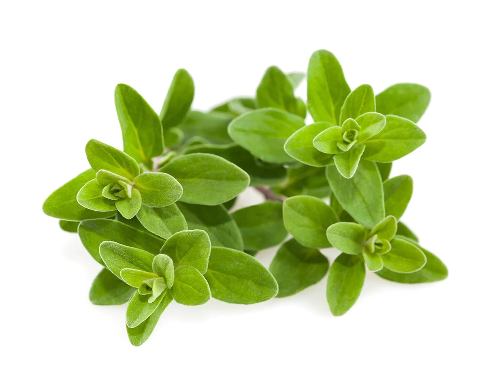
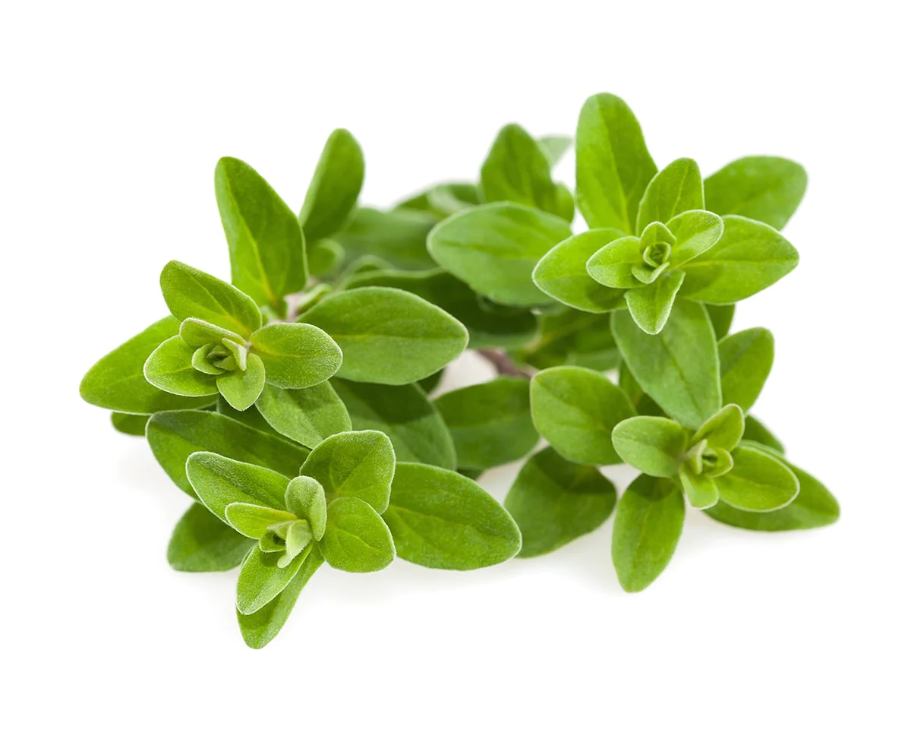
ENGLISH
1] Selecting a Location:
Marjoram prefers well-drained, moderately fertile soil.Choose a location with full sunlight for optimal growth.
2] Soil Preparation:
Prepare the soil by adding organic compost or well-rotted manure.Marjoram prefers slightly alkaline to neutral soil.
3] Planting Marjoram:
Marjoram can be grown from seeds or propagated by dividing established plants.Sow seeds indoors and transplant seedlings after the last frost, or sow directly in the garden in the spring.
4] Spacing:
Space marjoram plants about 12 to 18 inches apart to allow for their spreading habit.
5] Watering:
Keep the soil consistently moist, especially during dry periods.Water at the base of the plant to keep the foliage dry.
6] Fertilization:
Marjoram doesn't require heavy fertilization.A balanced fertilizer applied in the spring is usually sufficient.
7] Mulching:
Apply a layer of mulch around the plants to retain moisture and suppress weeds.
8] Pruning:
Prune marjoram regularly to encourage bushy growth.Pinch back the tips to prevent the plant from becoming leggy.
9] Flowering:
Marjoram produces small clusters of white or pink flowers in mid to late summer.
10] Harvesting:
Harvest marjoram leaves as needed once the plant is well-established.The leaves have a mild, sweet flavor and are commonly used in culinary dishes.
ENGLISH
తెలుగు
1]ఒక స్థానాన్ని ఎంచుకోవడం:
మార్జోరామ్ బాగా ఎండిపోయిన, మధ్యస్తంగా సారవంతమైన నేలను ఇష్టపడుతుంది.
సరైన పెరుగుదల కోసం పూర్తి సూర్యకాంతి ఉన్న ప్రదేశాన్ని ఎంచుకోండి.
2]
నేల తయారీ:
సేంద్రీయ కంపోస్ట్ లేదా బాగా కుళ్ళిన ఎరువును జోడించడం ద్వారా మట్టిని సిద్ధం చేయండి.
మార్జోరామ్ తటస్థ నేల కంటే కొద్దిగా ఆల్కలీన్ను ఇష్టపడుతుంది.
3]
మార్జోరామ్ నాటడం:
మార్జోరామ్ను విత్తనాల నుండి పెంచవచ్చు లేదా స్థాపించబడిన మొక్కలను విభజించడం ద్వారా ప్రచారం చేయవచ్చు.
ఇంటి లోపల విత్తనాలను విత్తండి మరియు చివరి మంచు తర్వాత మొలకల మార్పిడి చేయండి లేదా వసంతకాలంలో తోటలో నేరుగా
విత్తండి.
4]
అంతరం:
12 నుండి 18 అంగుళాల దూరంలో ఉన్న మార్జోరామ్ మొక్కలు వాటి వ్యాప్తికి అలవాటు పడతాయి.
5]
నీరు త్రాగుట:
మట్టిని స్థిరంగా తేమగా ఉంచండి, ముఖ్యంగా పొడి కాలంలో.
ఆకులను పొడిగా ఉంచడానికి మొక్క అడుగున నీరు పెట్టండి.
6]
ఫలదీకరణం:
మార్జోరామ్కు భారీ ఫలదీకరణం అవసరం లేదు.వసంతకాలంలో వర్తించే సమతుల్య ఎరువులు సాధారణంగా సరిపోతుంది.
7]
మల్చింగ్:
తేమను నిలుపుకోవటానికి మరియు కలుపు మొక్కలను అణిచివేసేందుకు మొక్కల చుట్టూ రక్షక కవచాన్ని వేయండి.
8]
కత్తిరింపు:
బుష్ పెరుగుదలను ప్రోత్సహించడానికి మార్జోరామ్ను క్రమం తప్పకుండా కత్తిరించండి.
మొక్క కాళ్లుగా మారకుండా నిరోధించడానికి చిట్కాలను వెనుకకు చిటికెడు.
9]
పుష్పించే:
మార్జోరామ్ వేసవి మధ్యలో నుండి చివరి వరకు తెలుపు లేదా గులాబీ పువ్వుల చిన్న సమూహాలను ఉత్పత్తి చేస్తుంది.
హార్వెస్టింగ్:
మొక్క బాగా స్థిరపడిన తర్వాత అవసరమైన విధంగా మార్జోరామ్ ఆకులను కోయండి.
ఆకులు తేలికపాటి, తీపి రుచిని కలిగి ఉంటాయి మరియు సాధారణంగా పాక వంటలలో ఉపయోగిస్తారు.
తెలుగు
వినండి
20.Sage / 20.ఋషి

 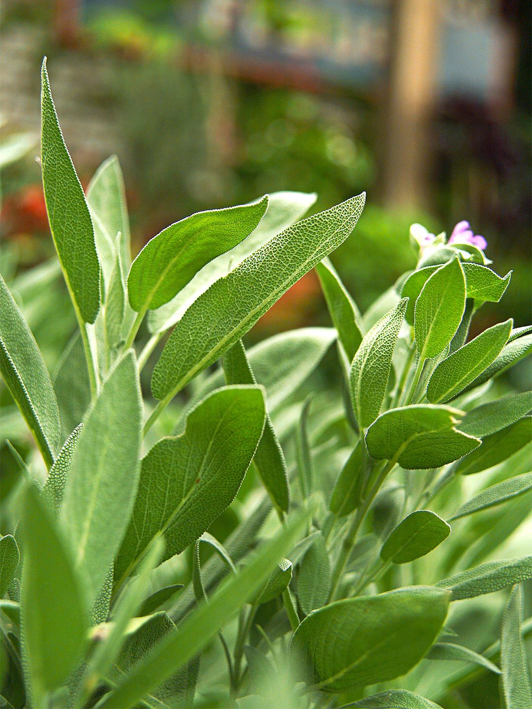
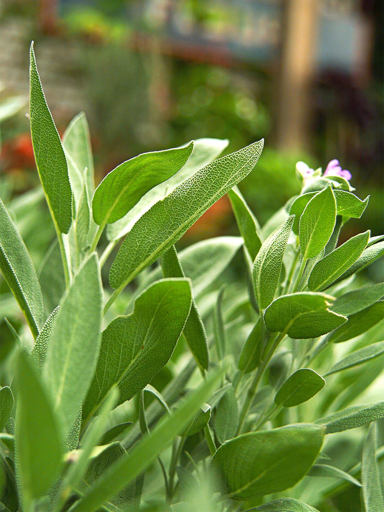
ENGLISH
1] Selecting a Location:
Sage prefers well-drained, sandy-loam soil.Choose a location with full sunlight for at least 6-8 hours a day.
2] Soil Preparation:
Prepare the soil by adding organic matter and ensuring it has good drainage.Sage prefers slightly alkaline to neutral soil.
3] Planting Sage:
Sage can be grown from seeds, but it's more commonly propagated through cuttings or by dividing established plants.Plant sage in the spring after the last frost.
4] Spacing:
Space sage plants about 24 to 30 inches apart to allow for their eventual size.
5] Watering:
Sage prefers slightly dry conditions, so allow the soil to dry out between waterings.Water at the base of the plant to avoid wetting the foliage.
6] Fertilization:
Sage doesn't require heavy fertilization.A light application of balanced fertilizer in the spring is usually sufficient.
7] Mulching:
Apply a layer of mulch around the plants to retain moisture and suppress weeds.
8] Pruning:
Prune sage regularly to encourage bushy growth.Remove flower spikes after flowering to promote more leaf production.
9] Flowering:
Sage produces spikes of lavender-blue flowers in late spring to early summer.
10] Harvesting:
Harvest sage leaves as needed once the plant is well-established.The leaves have a strong, earthy flavor and are commonly used in cooking.
Thank you!
ENGLISH
తెలుగు
1] ఒక స్థానాన్ని ఎంచుకోవడం:
సేజ్ బాగా ఎండిపోయిన, ఇసుక-లోమ్ మట్టిని ఇష్టపడుతుంది.
రోజుకు కనీసం 6-8 గంటల పాటు పూర్తి సూర్యకాంతి ఉన్న ప్రదేశాన్ని ఎంచుకోండి.
2]
నేల తయారీ:
సేంద్రీయ పదార్థాన్ని జోడించడం ద్వారా మట్టిని సిద్ధం చేయండి మరియు మంచి పారుదల ఉండేలా చూసుకోండి.
సేజ్ తటస్థ మట్టికి కొద్దిగా ఆల్కలీన్ను ఇష్టపడుతుంది.
3]
నాటడం సేజ్:
సేజ్ విత్తనాల నుండి పెంచవచ్చు, కానీ ఇది సాధారణంగా కోత ద్వారా లేదా స్థాపించబడిన మొక్కలను విభజించడం
ద్వారా ప్రచారం చేయబడుతుంది.
చివరి మంచు తర్వాత వసంతకాలంలో మొక్క సేజ్.
4]
అంతరం:
స్పేస్ సేజ్ మొక్కలు వాటి చివరి పరిమాణాన్ని అనుమతించడానికి 24 నుండి 30 అంగుళాల దూరంలో ఉంటాయి.
5]
నీరు త్రాగుట:
సేజ్ కొద్దిగా పొడి పరిస్థితులను ఇష్టపడుతుంది, కాబట్టి నీరు త్రాగుటకు లేక మధ్య నేల పొడిగా ఉండటానికి
అనుమతించండి.
ఆకులను తడి చేయకుండా ఉండటానికి మొక్క అడుగున నీరు పెట్టండి.
6]
ఫలదీకరణం:
సేజ్ భారీ ఫలదీకరణం అవసరం లేదు.వసంతకాలంలో సమతుల్య ఎరువుల యొక్క తేలికపాటి అప్లికేషన్ సాధారణంగా
సరిపోతుంది.
7]మల్చింగ్:
తేమను నిలుపుకోవటానికి మరియు కలుపు మొక్కలను అణిచివేసేందుకు మొక్కల చుట్టూ రక్షక కవచాన్ని వేయండి.
8]
కత్తిరింపు:
గుబురు పెరుగుదలను ప్రోత్సహించడానికి సేజ్ను క్రమం తప్పకుండా కత్తిరించండి.
మరింత ఆకు ఉత్పత్తిని ప్రోత్సహించడానికి పుష్పించే తర్వాత పూల స్పైక్లను తొలగించండి.
9]
పుష్పించే:
సేజ్ వసంత ఋతువు చివరి నుండి వేసవి ప్రారంభంలో లావెండర్-నీలం పువ్వుల స్పైక్లను ఉత్పత్తి చేస్తుంది.
10]
హార్వెస్టింగ్:
మొక్క బాగా స్థిరపడిన తర్వాత అవసరమైన మేరకు సేజ్ ఆకులను కోయండి.
ఆకులు బలమైన, మట్టి రుచిని కలిగి ఉంటాయి మరియు సాధారణంగా వంటలో ఉపయోగిస్తారు.
ధన్యవాదాలు!
తెలుగు
వినండి
21.ROSEMARY / 21.రోజ్మేరీ


ENGLISH
1] Selecting a Location:
Rosemary prefers well-drained, sandy soil.Choose a location with full sunlight for at least 6-8 hours a day.
2] Soil Preparation:
Ensure the soil has good drainage and is not too heavy.Rosemary prefers slightly acidic to neutral soil.
3] Planting Rosemary:
Rosemary is often propagated from cuttings or purchased as seedlings.Plant in the spring after the last frost.
4] Spacing:
Space rosemary plants about 24 to 36 inches apart to allow for their eventual size.
5] Watering:
Rosemary prefers slightly dry conditions, so allow the soil to dry out between waterings.Water at the base of the plant to avoid wetting the foliage.
6] Fertilization:
Apply a layer of mulch around the plants to retain moisture and suppress weeds.
7] Pruning:
Prune rosemary regularly to maintain its shape and encourage bushy growth.Remove dead or woody growth to stimulate new growth.
8] Flowering:
Rosemary produces small, light blue to white flowers in spring and early summer.
9] Harvesting:
Harvest rosemary leaves as needed once the plant is well-established.The leaves have a strong, pine-like aroma and are commonly used in cooking.
ENGLISH
తెలుగు
1] ఒక స్థానాన్ని ఎంచుకోవడం:
రోజ్మేరీ బాగా ఎండిపోయిన, ఇసుక నేలను ఇష్టపడుతుంది.
రోజుకు కనీసం 6-8 గంటల పాటు పూర్తి సూర్యకాంతి ఉన్న ప్రదేశాన్ని ఎంచుకోండి.
2]
నేల తయారీ:
నేల మంచి పారుదలని కలిగి ఉందని మరియు చాలా బరువుగా లేదని నిర్ధారించుకోండి.
రోజ్మేరీ తటస్థ మట్టికి కొద్దిగా ఆమ్లాన్ని ఇష్టపడుతుంది.
3]
రోజ్మేరీ నాటడం:
రోజ్మేరీ తరచుగా కోత నుండి ప్రచారం చేయబడుతుంది లేదా మొలకల వలె కొనుగోలు చేయబడుతుంది.
చివరి మంచు తర్వాత వసంతకాలంలో మొక్క.
4]
అంతరం:
రోజ్మేరీ మొక్కలు వాటి అంతిమ పరిమాణాన్ని అనుమతించడానికి 24 నుండి 36 అంగుళాల దూరంలో ఉంటాయి.
5]
నీరు త్రాగుట:
రోజ్మేరీ కొద్దిగా పొడి పరిస్థితులను ఇష్టపడుతుంది, కాబట్టి నీరు త్రాగుటకు లేక మధ్య నేల పొడిగా ఉండటానికి
అనుమతించండి.
ఆకులను తడి చేయకుండా ఉండటానికి మొక్క అడుగున నీరు పెట్టండి.
6]
ఫలదీకరణం:
రోజ్మేరీకి భారీ ఫలదీకరణం అవసరం లేదు.వసంతకాలంలో సమతుల్య ఎరువుల యొక్క తేలికపాటి అప్లికేషన్ సాధారణంగా
సరిపోతుంది.
7]
మల్చింగ్:
తేమను నిలుపుకోవటానికి మరియు కలుపు మొక్కలను అణిచివేసేందుకు మొక్కల చుట్టూ రక్షక కవచాన్ని వేయండి.
8]
కత్తిరింపు:
రోజ్మేరీని దాని ఆకారాన్ని నిర్వహించడానికి మరియు గుబురుగా పెరగడాన్ని ప్రోత్సహించడానికి క్రమం తప్పకుండా
కత్తిరించండి.
కొత్త పెరుగుదలను ప్రేరేపించడానికి చనిపోయిన లేదా చెక్క పెరుగుదలను తొలగించండి.
9]
పుష్పించే:
రో జ్మేరీ వసంత ఋతువులో మరియు వేసవి ప్రారంభంలో చిన్న, లేత నీలం నుండి తెలుపు పువ్వులను ఉత్పత్తి
చేస్తుంది.
10]
హార్వెస్టింగ్:
మొక్క బాగా స్థిరపడిన తర్వాత రోజ్మేరీ ఆకులను అవసరమైన విధంగా కోయండి.
ఆకులు బలమైన, పైన్ లాంటి వాసన కలిగి ఉంటాయి మరియు సాధారణంగా వంటలో ఉపయోగిస్తారు.
ధన్యవాదాలు!
తెలుగు
వినండి
22.Thyme / 22 .థైమ్

 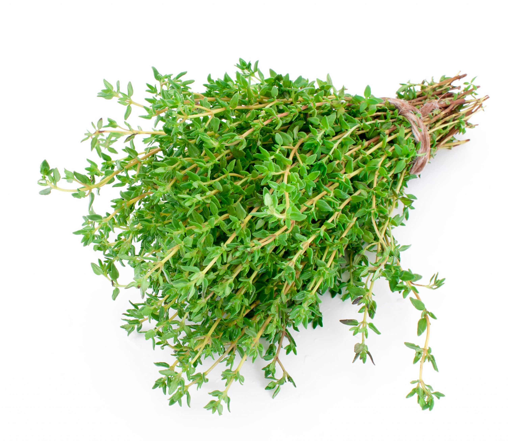
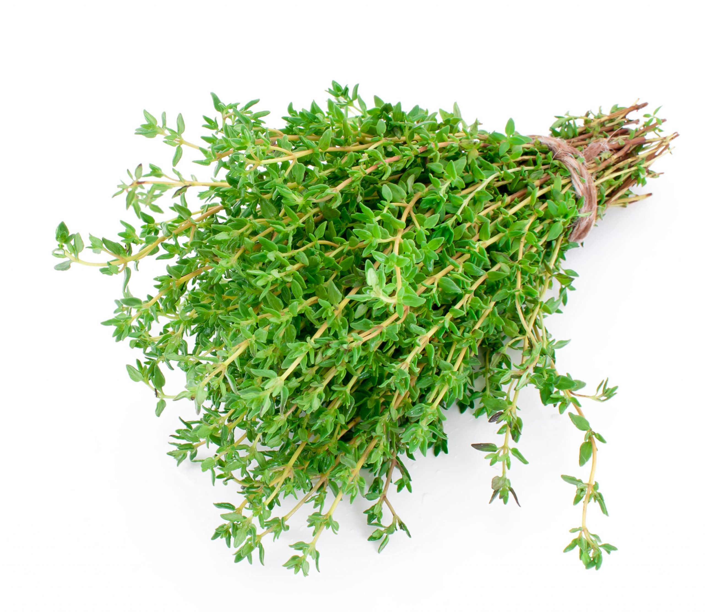
ENGLISH
1] Selecting a Location:
Thyme prefers well-drained, sandy soil.Choose a location with full sunlight for at least 6-8 hours a day.
2] Soil Preparation:
Ensure the soil has good drainage and is not too heavy.Thyme prefers slightly alkaline to neutral soil.
3] Planting Thyme:
Thyme is often propagated from seeds, cuttings, or purchased as seedlings.Plant in the spring after the last frost.
4] Spacing:
Space thyme plants about 12 to 24 inches apart to allow for their spreading habit.
5] Watering:
Thyme prefers slightly dry conditions, so allow the soil to dry out between waterings.Water at the base of the plant to avoid wetting the foliage.
6] Fertilization:
Thyme is a low-maintenance herb and typically doesn't require heavy fertilization.A light application of balanced fertilizer in the spring is usually sufficient.
7] Mulching:
Apply a layer of mulch around the plants to retain moisture and suppress weeds.
8] Pruning:
Prune thyme regularly to maintain its shape and encourage bushy growth.Remove dead or woody growth to stimulate new growth.
9] Flowering:
Thyme produces small flowers in shades of pink to purple in late spring and early summer.
10] Harvesting:
Harvest thyme leaves as needed once the plant is well-established.Trim off the top growth, leaving at least 2 inches of stem to encourage regrowth.Avoid harvesting more than one-third of the plant at a time to ensure continued growth and vigor.
ENGLISH
తెలుగు
1]ఒక స్థానాన్ని ఎంచుకోవడం:
థైమ్ బాగా ఎండిపోయిన, ఇసుక నేలను ఇష్టపడుతుంది.
రోజుకు కనీసం 6-8 గంటల పాటు పూర్తి సూర్యకాంతి ఉన్న ప్రదేశాన్ని ఎంచుకోండి.
2]
నేల తయారీ:
నేల మంచి పారుదలని కలిగి ఉందని మరియు చాలా బరువుగా లేదని నిర్ధారించుకోండి.
థైమ్ తటస్థ మట్టికి కొద్దిగా ఆల్కలీన్ను ఇష్టపడుతుంది.
3]
థైమ్ నాటడం:
థైమ్ తరచుగా విత్తనాలు, కోత నుండి ప్రచారం చేయబడుతుంది లేదా మొలకల వలె కొనుగోలు చేయబడుతుంది.
చివరి మంచు తర్వాత వసంతకాలంలో మొక్క.
4]
అంతరం:
థైమ్ మొక్కలు వాటి వ్యాప్తికి అలవాటు పడేందుకు 12 నుండి 24 అంగుళాల దూరంలో ఉంటాయి.
5]
నీరు త్రాగుట:
థైమ్ కొద్దిగా పొడి పరిస్థితులను ఇష్టపడుతుంది, కాబట్టి నీరు త్రాగుట మధ్య నేల ఎండిపోయేలా చేస్తుంది.
ఆకులను తడి చేయకుండా ఉండటానికి మొక్క అడుగున నీరు పెట్టండి.
6]
ఫలదీకరణం:
థైమ్ తక్కువ-నిర్వహణ హెర్బ్ మరియు సాధారణంగా భారీ ఫలదీకరణం అవసరం లేదు.
వసంతకాలంలో సమతుల్య ఎరువుల యొక్క తేలికపాటి అప్లికేషన్ సాధారణంగా సరిపోతుంది.
7]
మల్చింగ్:
తేమను నిలుపుకోవటానికి మరియు కలుపు మొక్కలను అణిచివేసేందుకు మొక్కల చుట్టూ రక్షక కవచాన్ని వేయండి.
8]
కత్తిరింపు:
థైమ్ను దాని ఆకారాన్ని కొనసాగించడానికి మరియు గుబురు పెరుగుదలను ప్రోత్సహించడానికి క్రమం తప్పకుండా
కత్తిరించండి.
కొత్త పెరుగుదలను ప్రేరేపించడానికి చనిపోయిన లేదా చెక్క పెరుగుదలను తొలగించండి.
9]
పుష్పించే:
థైమ్ వసంత ఋతువు చివరిలో మరియు వేసవి ప్రారంభంలో గులాబీ నుండి ఊదా రంగులో చిన్న పువ్వులను ఉత్పత్తి
చేస్తుంది.
10]
హార్వెస్టింగ్:
మొక్క బాగా స్థిరపడిన తర్వాత అవసరమైన విధంగా థైమ్ ఆకులను కోయండి.
11]
వంటల ఉపయోగాలు:
ఆకులు రుచికరమైన, మట్టి రుచిని కలిగి ఉంటాయి మరియు సాధారణంగా వంటలో ఉపయోగిస్తారు.
ధన్యవాదాలు!
తెలుగు
వినండి
23.Caraway / 23.కారవే

ENGLISH
1] Selecting a Location:
Caraway prefers well-drained, sandy-loam soil.Choose a location with full sunlight for at least 6 hours a day.
2] Soil Preparation:
Ensure the soil has good drainage and is rich in organic matter.Caraway prefers slightly acidic to neutral soil.
3] Planting Caraway:
Caraway is grown from seeds, which can be sown directly in the garden in the early spring or late fall.Space the seeds about 6 to 12 inches apart.
4] Watering:
Keep the soil consistently moist, especially during the germination period.Once established, caraway is somewhat drought-tolerant.
5] Thinning:
Thin seedlings to maintain proper spacing once they are a few inches tall.
6] Fertilization:
Caraway doesn't require heavy fertilization.A balanced fertilizer applied in the spring is usually sufficient.
7] Mulching:
Apply a layer of mulch around the plants to retain moisture and suppress weeds.
8] Flowering:
Caraway plants produce small white or pink flowers in their second year.
9] Harvesting Seeds:
Harvest caraway seeds in the second year once the flowers have dried and the seeds have turned brown.Cut the seed heads and hang them upside down to dry in a well-ventilated area.
10] Drying:
Once the seeds are dry, remove them from the seed heads and store them in airtight containers in a cool, dark place.
11] Culinary Uses:
Caraway seeds are commonly used as a spice in various culinary dishes, particularly in bread, sauerkraut, and certain meat dishes.The seeds have a distinctive earthy, anise-like flavor.
12] Medicinal Uses:
Caraway has been used in traditional medicine for its potential digestive benefits.It is believed to help alleviate indigestion and gas.
13] Care and Maintenance:
Caraway is a biennial plant.In its second year, it will produce seeds and then die.Allow some flowers to remain unharvested to ensure the next generation of plants.Watch for pests and diseases, and take appropriate measures for control.
ENGLISH
తెలుగు
1] ఒక స్థానాన్ని ఎంచుకోవడం:
కారవే బాగా ఎండిపోయిన, ఇసుక-లోమ్ నేలను ఇష్టపడుతుంది.
రోజుకు కనీసం 6 గంటల పాటు పూర్తి సూర్యకాంతి ఉన్న ప్రదేశాన్ని ఎంచుకోండి.
2]
నేల తయారీ:
నేల మంచి పారుదలని కలిగి ఉందని మరియు సేంద్రీయ పదార్థంతో సమృద్ధిగా ఉందని నిర్ధారించుకోండి.
కారవే తటస్థ మట్టికి కొద్దిగా ఆమ్లాన్ని ఇష్టపడుతుంది.
3]
కారవే నాటడం:
కారవే విత్తనాల నుండి పెరుగుతుంది, ఇది వసంత ఋతువులో లేదా చివరి పతనంలో తోటలో నేరుగా నాటవచ్చు.
విత్తనాలను 6 నుండి 12 అంగుళాల దూరంలో ఉంచండి.
4]
నీరు త్రాగుట:
ముఖ్యంగా అంకురోత్పత్తి కాలంలో మట్టిని నిరంతరం తేమగా ఉంచండి.
ఒకసారి స్థాపించబడిన తర్వాత, కారవే కొంతవరకు కరువును తట్టుకోగలదు.
5]
సన్నబడటం:
సన్నగా ఉండే మొలకలు కొన్ని అంగుళాల ఎత్తులో ఉన్నప్పుడు సరైన అంతరాన్ని కలిగి ఉంటాయి.
6]
ఫలదీకరణం:
కారవేకి భారీ ఫలదీకరణం అవసరం లేదు.వసంతకాలంలో వర్తించే సమతుల్య ఎరువులు సాధారణంగా సరిపోతుంది.
7]
మల్చింగ్:
తేమను నిలుపుకోవటానికి మరియు కలుపు మొక్కలను అణిచివేసేందుకు మొక్కల చుట్టూ రక్షక కవచాన్ని వేయండి.
8]
పుష్పించే:
కారవే మొక్కలు వారి రెండవ సంవత్సరంలో చిన్న తెలుపు లేదా గులాబీ పువ్వులను ఉత్పత్తి చేస్తాయి.
9]
హార్వెస్టింగ్ విత్తనాలు:
పువ్వులు ఎండిపోయి, గింజలు గోధుమ రంగులోకి మారిన తర్వాత రెండవ సంవత్సరంలో కారవే విత్తనాలను కోయండి.
విత్తన తలలను కత్తిరించి, బాగా వెంటిలేషన్ ఉన్న ప్రదేశంలో ఆరబెట్టడానికి తలక్రిందులుగా వేలాడదీయండి.
10]
ఎండబెట్టడం:
విత్తనాలు ఎండిన తర్వాత, వాటిని సీడ్ హెడ్స్ నుండి తీసివేసి, వాటిని గాలి చొరబడని కంటైనర్లలో చల్లని,
చీకటి ప్రదేశంలో నిల్వ చేయండి.
11]
వంటల ఉపయోగాలు:
కారవే గింజలను సాధారణంగా వివిధ పాక వంటలలో, ప్రత్యేకించి బ్రెడ్, సౌర్క్రాట్ మరియు కొన్ని మాంసం వంటలలో
మసాలాగా ఉపయోగిస్తారు.
విత్తనాలు ప్రత్యేకమైన మట్టి, సోంపు లాంటి రుచిని కలిగి ఉంటాయి.
12]
ఔషధ ఉపయోగాలు:
కారవే దాని సంభావ్య జీర్ణ ప్రయోజనాల కోసం సాంప్రదాయ వైద్యంలో ఉపయోగించబడింది.
ఇది అజీర్ణం మరియు గ్యాస్ను తగ్గించడంలో సహాయపడుతుందని నమ్ముతారు.
13]
సంరక్షణ మరియు నిర్వహణ:
కారవే ద్వైవార్షిక మొక్క.రెండవ సంవత్సరంలో, ఇది విత్తనాలను ఉత్పత్తి చేస్తుంది మరియు తరువాత చనిపోతుంది.
తరువాతి తరం మొక్కలను నిర్ధారించడానికి కొన్ని పువ్వులు కోయకుండా ఉండనివ్వండి.
తెగుళ్లు మరియు వ్యాధుల కోసం చూడండి మరియు నియంత్రణ కోసం తగిన చర్యలు తీసుకోండి.
ధన్యవాదాలు!
తెలుగు
వినండి
24.Celery / 24.సెర్లీ
ENGLISH
1] Selecting a Location:
Celery prefers well-drained soil rich in organic matter.Choose a location with full sunlight, especially in cooler climates.
2] Soil Preparation:
Prepare the soil by adding well-rotted compost or organic matter.Celery prefers slightly acidic to neutral soil.
3] Planting Celery:
Celery is typically grown from seeds started indoors.Start seeds 10 to 12 weeks before the last expected frost date and transplant seedlings outdoors after the danger of frost has passed.
4] Spacing:
Space celery plants about 6 to 12 inches apart in rows, with rows spaced about 24 to 36 inches apart.
5] Watering:
Celery requires consistent moisture to prevent bitterness and cracking.Ensure the soil remains consistently moist but not waterlogged.
6] Fertilization:
Celery benefits from regular fertilization, especially with a balanced fertilizer high in nitrogen.Side-dress with fertilizer throughout the growing season.
7] Mulching:
Apply a layer of mulch around the plants to retain moisture, suppress weeds, and keep the soil cool.
8] Hilling:
As celery plants grow, hill the soil around the base to blanch the stalks.This can be done gradually as the plant grows.
9] Thinning:
Thin celery seedlings to the desired spacing once they are a few inches tall.
10] Harvesting:
Harvest celery stalks when they reach the desired size.Start with the outer stalks and work inward.Harvest in the morning for the best flavor.
Thank you!
ENGLISH
తెలుగు
1]ఒక స్థానాన్ని ఎంచుకోవడం:
Celeryసెలెరీ సేంద్రీయ పదార్థంతో కూడిన బాగా ఎండిపోయిన మట్టిని ఇష్టపడుతుంది.
పూర్తి సూర్యకాంతి ఉన్న ప్రదేశాన్ని ఎంచుకోండి, ముఖ్యంగా చల్లని వాతావరణంలో.
2]
నేల తయారీ:
Celeryబాగా కుళ్ళిన కంపోస్ట్ లేదా సేంద్రియ పదార్థాన్ని జోడించడం ద్వారా మట్టిని సిద్ధం చేయండి.
సెలెరీ తటస్థ మట్టికి కొద్దిగా ఆమ్లాన్ని ఇష్టపడుతుంది.
3]
సెలెరీ నాటడం:
Celery Celeryసెలెరీని సాధారణంగా ఇంటి లోపల ప్రారంభించిన విత్తనాల నుండి పెంచుతారు.
చివరిగా ఊహించిన మంచు తేదీకి 10 నుండి 12 వారాల ముందు విత్తనాలను ప్రారంభించండి మరియు మంచు ప్రమాదం దాటిన తర్వాత
ఆరుబయట మొలకలను మార్పిడి చేయండి.
4]
అంతరం:
స్పే Celeryస్ సెలెరీ మొక్కలు 6 నుండి 12 అంగుళాల దూరంలో వరుసలలో ఉంటాయి, వరుసలు 24 నుండి 36 అంగుళాల
దూరంలో ఉంటాయి.
5]
నీరు త్రాగుట:
Celeryచేదు మరియు పగుళ్లను నివారించడానికి సెలెరీకి స్థిరమైన తేమ అవసరం.
నేల నిలకడగా తేమగా ఉండేలా చూసుకోండి, కానీ నీటితో నిండి ఉండదు.
6]
ఫలదీకరణం:
Celeryసాధారణ ఫలదీకరణం నుండి సెలెరీ ప్రయోజనాలను పొందుతుంది, ముఖ్యంగా నత్రజని అధికంగా ఉండే సమతుల్య
ఎరువులతో.
పెరుగుతున్న సీజన్ అంతటా ఎరువులతో సైడ్-డ్రెస్.
7]
మల్చింగ్:
Celeryతేమను నిలుపుకోవటానికి, కలుపు మొక్కలను అణిచివేసేందుకు మరియు నేలను చల్లగా ఉంచడానికి మొక్కల చుట్టూ
రక్షక కవచం యొక్క పొరను వర్తించండి.
8]
హిల్లింగ్:
Celeryఆకుకూరల మొక్కలు పెరిగేకొద్దీ, కాండాలను బ్లాంచ్ చేయడానికి బేస్ చుట్టూ మట్టిని కొండ చేయండి.మొక్క
పెరుగుతున్నప్పుడు ఇది క్రమంగా చేయవచ్చు.
9]
సన్నబడటం:
సన్నని సెలెరీ మొలకలు కొన్ని అంగుళాల పొడవు ఉన్నప్పుడు కావలసిన అంతరానికి.
10]
హార్వెస్టింగ్:
సెలెరీ కాండాలు కావలసిన పరిమాణానికి చేరుకున్నప్పుడు వాటిని కోయండి.బయటి కాండాలతో ప్రారంభించండి మరియు లోపలికి
పని చేయండి.
ఉత్తమ రుచి కోసం ఉదయం కోయండి.
ధన్యవాదాలు!
తెలుగు
వినండి
25.Saffron / 25.కుంకుమపువ్వు
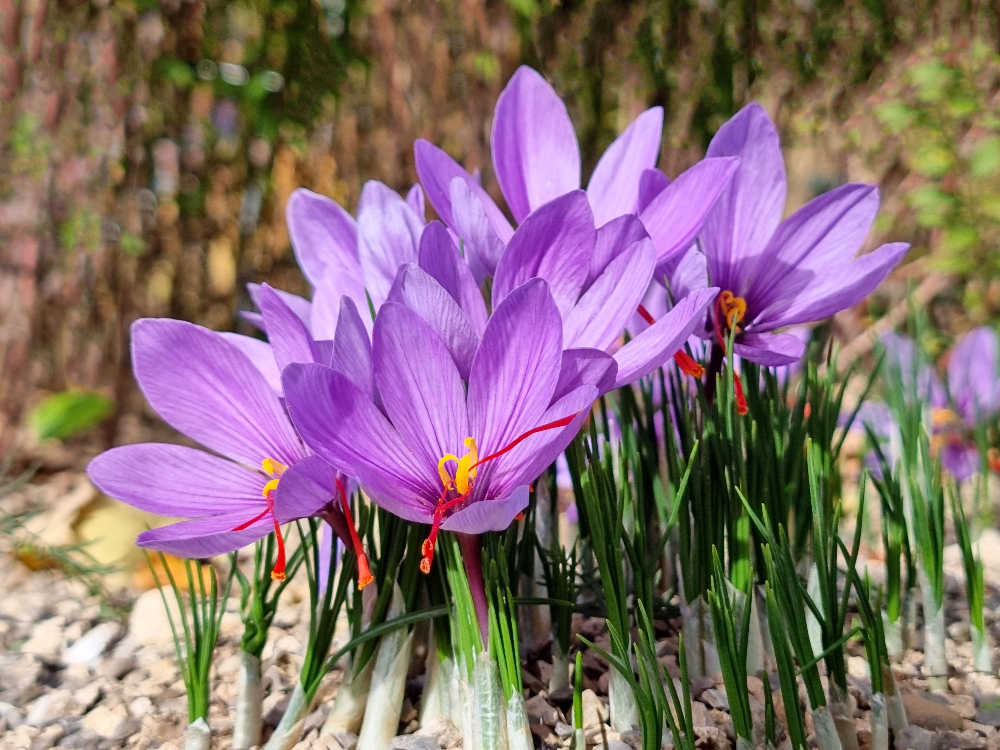

ENGLISH
1] Selecting a Location:
Saffron prefers well-drained soil with good sunlight.Choose a location with full sunlight, and ensure the soil is loose and well-draining.
2] Soil Preparation:
Prepare the soil by adding organic matter and sand to improve drainage.Saffron prefers slightly acidic to neutral soil.
3] Planting Saffron Bulbs (Corms):
Plant saffron corms in late summer or early autumn.The corms should be planted 3 to 5 inches deep and spaced about 4 to 6 inches apart.Plant in groups or rows for a better visual display.
4] Watering:
Saffron corms need consistent moisture, especially during their growing season in the fall.Reduce watering in late spring and summer when the plant is dormant.
5] Fertilization:
Saffron generally doesn't require heavy fertilization.A balanced fertilizer applied in the fall can be beneficial.
6] Mulching:
Apply a thin layer of mulch to protect the soil during the winter and conserve moisture.
7] Flowering:
Saffron produces beautiful purple flowers with three vivid red stigmas (saffron threads).Flowers typically bloom in the fall.
8] Harvesting Saffron:
Harvest saffron threads (stigmas) in the morning after the flowers have fully opened.Gently pluck the red stigmas.
ENGLISH
తెలుగు
1]ఒక స్థానాన్ని ఎంచుకోవడం:
కుంకుమపువ్వు మంచి సూర్యకాంతితో బాగా ఎండిపోయిన నేలను ఇష్టపడుతుంది.
పూర్తి సూర్యకాంతి ఉన్న ప్రదేశాన్ని ఎంచుకోండి మరియు నేల వదులుగా మరియు బాగా ఎండిపోయేలా చూసుకోండి.
2]
నేల తయారీ:
డ్రైనేజీని మెరుగుపరచడానికి సేంద్రీయ పదార్థం మరియు ఇసుకను జోడించడం ద్వారా మట్టిని సిద్ధం చేయండి.
కుంకుమపువ్వు తటస్థ నేల కంటే కొద్దిగా ఆమ్లతను ఇష్టపడుతుంది.
3]
కుంకుమపువ్వు గడ్డలు నాటడం (కోర్మ్స్):
వేసవి చివరిలో లేదా శరదృతువు ప్రారంభంలో కుంకుమపువ్వు మొక్కను నాటండి.మొక్కజొన్నలను 3 నుండి 5 అంగుళాల
లోతులో నాటాలి మరియు 4 నుండి 6 అంగుళాల దూరంలో ఉండాలి.
మెరుగైన దృశ్యమాన ప్రదర్శన కోసం సమూహాలలో లేదా వరుసలలో నాటండి.
4]
నీరు త్రాగుట:
కుంకుమపువ్వు పూతలకు స్థిరమైన తేమ అవసరం, ముఖ్యంగా పతనంలో వాటి పెరుగుతున్న కాలంలో.
మొక్క నిద్రాణంగా ఉన్నప్పుడు వసంతకాలం మరియు వేసవి చివరిలో నీరు త్రాగుట తగ్గించండి.
5]
ఫలదీకరణం:
కుంకుమపువ్వు సాధారణంగా భారీ ఫలదీకరణం అవసరం లేదు.శరదృతువులో వర్తించే సమతుల్య ఎరువులు ప్రయోజనకరంగా
ఉంటాయి.
6]
మల్చింగ్:
చలికాలంలో నేలను రక్షించడానికి మరియు తేమను సంరక్షించడానికి మల్చ్ యొక్క పలుచని పొరను వర్తించండి.
7]
పుష్పించే:
కుంకుమపువ్వు మూడు స్పష్టమైన ఎరుపు స్టిగ్మాస్ (కుంకుమపువ్వు దారాలు)తో అందమైన ఊదారంగు పువ్వులను ఉత్పత్తి
చేస్తుంది.
పువ్వులు సాధారణంగా శరదృతువులో వికసిస్తాయి.
8]
కుంకుమపువ్వు కోయడం:
పూలు పూర్తిగా తెరిచిన తర్వాత ఉదయం పూట కుంకుమపువ్వు దారాలు (స్టిగ్మాస్) కోయండి.
రెడ్ స్టిగ్మాస్ని సున్నితంగా తీయండి
ధన్యవాదాలు!
తెలుగు
వినండి
26.DILL / 26.మెంతులు

ENGLISH
1] Selecting a Location:
Dill prefers well-drained soil that is rich in organic matter.Choose a location with full sunlight, as dill thrives in sunny conditions.
2] Soil Preparation:
Prepare the soil by incorporating compost or well-rotted manure.Dill prefers slightly acidic to neutral soil.
3] Planting Dill Seeds:
Dill is typically grown from seeds, which can be sown directly in the garden.Sow seeds in the spring or early summer, as dill prefers cooler temperatures.
4] Spacing:
Space dill plants about 12 to 18 inches apart to allow for their feathery growth.
5] Watering:
Keep the soil consistently moist, especially during dry periods.Water at the base of the plant to avoid wetting the foliage.
6] Fertilization:
Dill generally doesn't require heavy fertilization.A balanced fertilizer applied in the spring is usually sufficient.
7] Mulching:
Apply a layer of mulch around the plants to retain moisture and suppress weeds.
8] Thinning:
Thin seedlings to maintain proper spacing once they are a few inches tall.
9] Harvesting Leaves:
Harvest dill leaves as needed once the plant is well-established.The leaves have a fresh, aromatic flavor and are commonly used in cooking.
10] Harvesting Seeds:
Allow some dill plants to flower and produce seeds if you wish to harvest dill seeds.Harvest the seeds once they have turned brown.
ENGLISH
తెలుగు
1]ఒక స్థానాన్ని ఎంచుకోవడం:
మెంతులు సేంద్రీయ పదార్థంతో కూడిన బాగా ఎండిపోయిన నేలను ఇష్టపడతాయి.
ఎండ పరిస్థితులలో మెంతులు వృద్ధి చెందుతాయి కాబట్టి, పూర్తి సూర్యకాంతి ఉన్న ప్రదేశాన్ని ఎంచుకోండి.
2]
నేల తయారీ:
కంపోస్ట్ లేదా బాగా కుళ్ళిన ఎరువును కలుపుకోవడం ద్వారా మట్టిని సిద్ధం చేయండి.
మెంతులు తటస్థ మట్టికి కొద్దిగా ఆమ్లాన్ని ఇష్టపడతాయి.
3]
మెంతులు విత్తనాలు నాటడం:
మెంతులు సాధారణంగా విత్తనాల నుండి పండిస్తారు, దీనిని నేరుగా తోటలో నాటవచ్చు.
వసంత ఋతువులో లేదా వేసవి ప్రారంభంలో విత్తనాలను విత్తండి, ఎందుకంటే మెంతులు చల్లటి ఉష్ణోగ్రతలను ఇష్టపడతాయి.
4]
అంతరం:
మెంతులు మొక్కలను వాటి రెక్కల పెరుగుదలకు 12 నుండి 18 అంగుళాల దూరంలో ఉంచండి.
5]
నీరు త్రాగుట:
మట్టిని స్థిరంగా తేమగా ఉంచండి, ముఖ్యంగా పొడి కాలంలో.
ఆకులను తడి చేయకుండా ఉండటానికి మొక్క అడుగున నీరు పెట్టండి.
6]
ఫలదీకరణం:
మెంతులు సాధారణంగా భారీ ఫలదీకరణం అవసరం లేదు.వసంతకాలంలో వర్తించే సమతుల్య ఎరువులు సాధారణంగా సరిపోతుంది.
7]
మల్చింగ్:
తేమను నిలుపుకోవటానికి మరియు కలుపు మొక్కలను అణిచివేసేందుకు మొక్కల చుట్టూ రక్షక కవచాన్ని వేయండి.
8]
సన్నబడటం:
సన్నగా ఉండే మొలకలు కొన్ని అంగుళాల ఎత్తులో ఉన్నప్పుడు సరైన అంతరాన్ని కలిగి ఉంటాయి.
9]
ఆకులు కోయడం:
మొక్క బాగా స్థిరపడిన తర్వాత అవసరమైన విధంగా మెంతులు ఆకులను కోయండి.
ఆకులు తాజా, సుగంధ రుచిని కలిగి ఉంటాయి మరియు సాధారణంగా వంటలో ఉపయోగిస్తారు.
10]
హార్వెస్టింగ్ విత్తనాలు:
మీరు మెంతులు విత్తనాలను పండించాలనుకుంటే కొన్ని మెంతులు మొక్కలను పుష్పించడానికి మరియు విత్తనాలను
ఉత్పత్తి
చేయడానికి అనుమతించండి.
విత్తనాలు గోధుమ రంగులోకి మారిన తర్వాత కోయండి.
తెలుగు
వినండి
27.Star Anise / 27.స్టార్ సోంపు


ENGLISH
1] Climate and Location:
Star anise thrives in warm, tropical climates with a temperature range of 68°F to 86°F (20°C to 30°C).It requires a frost-free environment.
2] Soil Preparation:
Plant star anise in well-drained, loamy soil with a slightly acidic to neutral pH.Ensure good soil fertility by adding organic matter.
3] Planting Star Anise Seeds:
Star anise is usually grown from seeds.Soak the seeds in warm water for a few hours before planting.Plant the seeds about 1 to 2 inches deep in the soil.
4] Spacing:
Space the star anise plants about 8 to 10 feet apart to allow for their spreading growth.
5] Watering:
Star anise requires regular and consistent watering, especially during dry periods.Ensure that the soil remains consistently moist but not waterlogged.
6] Fertilization:
Apply a balanced fertilizer during the growing season to support the plant's nutritional needs.
7] Mulching:
Mulch around the base of the star anise plants to retain moisture and suppress weeds.
8] Pruning:
Prune the plants as needed to maintain shape and encourage bushy growth.
9] Harvesting:
Star anise trees usually start producing seeds in their fourth or fifth year.Harvest the star-shaped seed pods when they are fully developed and just before they begin to open.
ENGLISH
1] Climate and Location:
Star anise thrives in warm, tropical climates with a temperature range of 68°F to 86°F (20°C to 30°C).It requires a frost-free environment.
2] Soil Preparation:
Plant star anise in well-drained, loamy soil with a slightly acidic to neutral pH.Ensure good soil fertility by adding organic matter.
3] Planting Star Anise Seeds:
Star anise is usually grown from seeds.Soak the seeds in warm water for a few hours before planting.Plant the seeds about 1 to 2 inches deep in the soil.
4] Spacing:
Space the star anise plants about 8 to 10 feet apart to allow for their spreading growth.
5] Watering:
Star anise requires regular and consistent watering, especially during dry periods.Ensure that the soil remains consistently moist but not waterlogged.
6] Fertilization:
Apply a balanced fertilizer during the growing season to support the plant's nutritional needs.
7] Mulching:
Mulch around the base of the star anise plants to retain moisture and suppress weeds.
8] Pruning:
Prune the plants as needed to maintain shape and encourage bushy growth.
9] Harvesting:
Star anise trees usually start producing seeds in their fourth or fifth year.Harvest the star-shaped seed pods when they are fully developed and just before they begin to open.
తెలుగు
1]లిమేట్ మరియు స్థానం:
స్టార్ సోంపు 68°F నుండి 86°F (20°C నుండి 30°C) ఉష్ణోగ్రత పరిధితో వెచ్చని, ఉష్ణమండల వాతావరణంలో వృద్ధి
చెందుతుంది.
దీనికి మంచు రహిత వాతావరణం అవసరం.
2]
నేల తయారీ:
కొద్దిగా ఆమ్లం నుండి తటస్థ pH వరకు బాగా ఎండిపోయిన, లోమీ నేలలో స్టార్ సోంపును నాటండి.
సేంద్రీయ పదార్థాన్ని జోడించడం ద్వారా మంచి నేల సంతానోత్పత్తిని నిర్ధారించుకోండి.
3]
స్టార్ సోంపు విత్తనాలను నాటడం:
స్టార్ సోంపు సాధారణంగా విత్తనాల నుండి పెరుగుతుంది.నాటడానికి ముందు విత్తనాలను కొన్ని గంటలు వెచ్చని
నీటిలో
నానబెట్టండి.
విత్తనాలను నేలలో 1 నుండి 2 అంగుళాల లోతులో నాటండి.
4]
అంతరం:
స్టార్ సోంపు మొక్కలను వాటి వ్యాప్తికి వీలుగా 8 నుండి 10 అడుగుల దూరంలో ఉంచండి.
5]
నీరు త్రాగుట:
స్టార్ సోంపుకు క్రమం తప్పకుండా మరియు స్థిరమైన నీరు త్రాగుట అవసరం, ముఖ్యంగా పొడి కాలంలో.
నేల నిలకడగా తేమగా ఉండేలా చూసుకోండి, కానీ నీటితో నిండి ఉండదు.
6]
ఫలదీకరణం:
మొక్క యొక్క పోషక అవసరాలకు మద్దతుగా పెరుగుతున్న కాలంలో సమతుల్య ఎరువులను వర్తించండి.
7]
మల్చింగ్:
తేమను నిలుపుకోవటానికి మరియు కలుపు మొక్కలను అణిచివేసేందుకు స్టార్ సోంపు మొక్కల పునాది చుట్టూ మల్చ్
చేయండి.
8]
కత్తిరింపు:
ఆకారాన్ని నిర్వహించడానికి మరియు గుబురుగా ఉండే పెరుగుదలను ప్రోత్సహించడానికి మొక్కలను అవసరమైన విధంగా
కత్తిరించండి.
9]
హార్వెస్టింగ్:
స్టార్ సోంపు చెట్లు సాధారణంగా నాల్గవ లేదా ఐదవ సంవత్సరంలో విత్తనాలను ఉత్పత్తి చేయడం ప్రారంభిస్తాయి.
నక్షత్రాకారపు గింజలు పూర్తిగా అభివృద్ధి చెందినప్పుడు మరియు అవి తెరవడానికి ముందు వాటిని కోయండి.
తెలుగు
వినండి
28.MACE / 28.జాపత్రి

 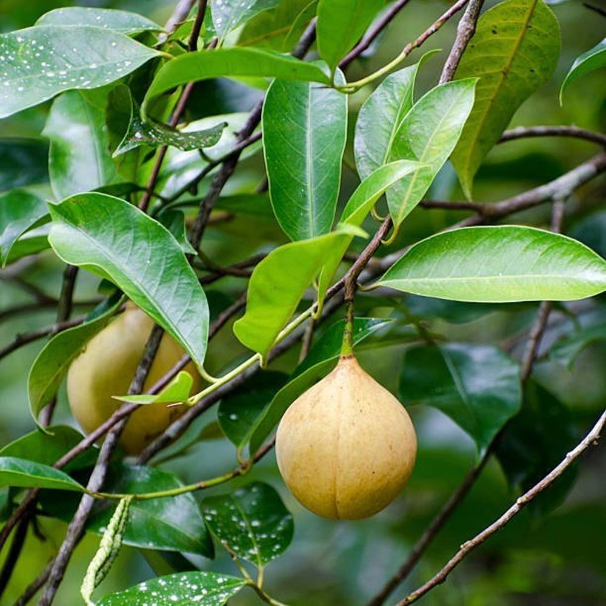
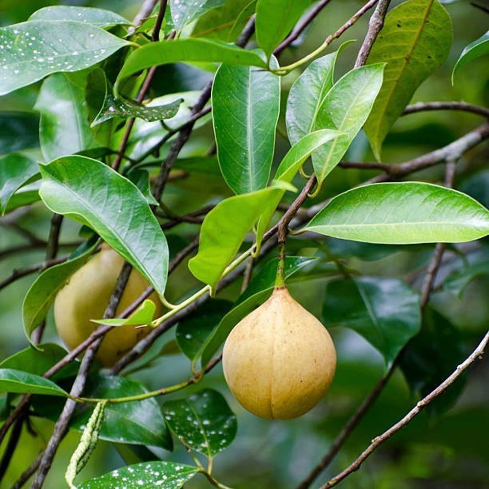
ENGLISH
1] Climate and Location:
Nutmeg (and consequently mace) is ideally grown in tropical climates with high humidity.It requires a consistently warm environment and cannot tolerate frost.
2] Soil Preparation:
Nutmeg plants thrive in well-drained, fertile soil.The soil should be rich in organic matter, and the pH level should be slightly acidic to neutral.
3] Planting Nutmeg Seeds:
Nutmeg is grown from seeds.Plant fresh seeds as soon as possible after harvesting.Plant the seeds about 1 to 2 inches deep in the soil.
4] Spacing:
Space nutmeg plants about 30 to 40 feet apart, as they grow into large trees.
5] Watering:
Nutmeg plants require regular and consistent watering, especially during dry periods.Keep the soil consistently moist but not waterlogged.
6] Fertilization:
Apply a balanced fertilizer during the growing season to support the nutritional needs of the plant.
7] Mulching:
Mulch around the base of the nutmeg plants to retain moisture, suppress weeds, and regulate soil temperature.
8] Pruning:
Prune the plants to maintain a desired shape and size.Remove dead or diseased branches regularly.
9] Harvesting:
Nutmeg trees typically start producing fruit after about 7 to 9 years.Harvest the fruits when they split open to reveal the aril (mace) covering the seed (nutmeg).
ENGLISH
తెలుగు
1]వాతావరణం మరియు స్థానం:
జాజికాయ (మరియు తత్ఫలితంగా జాపత్రి) అధిక తేమతో ఉష్ణమండల వాతావరణంలో ఆదర్శంగా పెరుగుతుంది.
దీనికి స్థిరమైన వెచ్చని వాతావరణం అవసరం మరియు మంచును తట్టుకోదు.
2]
నేల తయారీ:
జాజికాయ మొక్కలు బాగా ఎండిపోయిన, సారవంతమైన నేలలో వృద్ధి చెందుతాయి.
నేల సేంద్రీయ పదార్థంతో సమృద్ధిగా ఉండాలి మరియు pH స్థాయి తటస్థంగా కొద్దిగా ఆమ్లంగా ఉండాలి.
3]
జాజికాయ విత్తనాలు నాటడం:
జాజికాయ విత్తనాల నుండి పెరుగుతుంది.కోత తర్వాత వీలైనంత త్వరగా తాజా విత్తనాలను నాటండి.
విత్తనాలను నేలలో 1 నుండి 2 అంగుళాల లోతులో నాటండి.
4]
అంతరం:
జాజికాయ మొక్కలు దాదాపు 30 నుండి 40 అడుగుల దూరంలో ఉంటాయి, అవి పెద్ద వృక్షాలుగా పెరుగుతాయి.
5]
నీరు త్రాగుట:
మట్టిని నిలకడగా తేమగా ఉంచండి కాని నీరు నిలువకుండా ఉంచండి.
6]
ఫలదీకరణం:
మొక్క యొక్క పోషక అవసరాలకు మద్దతుగా పెరుగుతున్న కాలంలో సమతుల్య ఎరువులను వర్తించండి.
7]
మల్చింగ్:
తేమను నిలుపుకోవడానికి, కలుపు మొక్కలను అణిచివేసేందుకు మరియు నేల ఉష్ణోగ్రతను క్రమబద్ధీకరించడానికి
జాజికాయ మొక్కల పునాది చుట్టూ కప్పండి.
8]
కత్తిరింపు:
కావలసిన ఆకారం మరియు పరిమాణాన్ని నిర్వహించడానికి మొక్కలను కత్తిరించండి.
చనిపోయిన లేదా వ్యాధిగ్రస్తులైన కొమ్మలను క్రమం తప్పకుండా తొలగించండి.
9]
హార్వెస్టింగ్:
జాజికాయ చెట్లు సాధారణంగా 7 నుండి 9 సంవత్సరాల తర్వాత పండ్లను ఉత్పత్తి చేయడం ప్రారంభిస్తాయి.
విత్తనాన్ని (జాజికాయ) కప్పి ఉంచే ఆరిల్ (జాపత్రి)ని బహిర్గతం చేయడానికి పండ్లు విడిపోయినప్పుడు వాటిని కోయండి.
ధన్యవాదాలు!
తెలుగు
వినండి
29.Vanilla / 29.వనిల్లా

ENGLISH
1] Climate and Location:
Vanilla orchids thrive in tropical climates with warm temperatures and high humidity.They require a consistent temperature range of 59°F to 86°F (15°C to 30°C).
2] Soil and Growing Medium:
Vanilla orchids prefer well-draining, loose, and slightly acidic soil.They are often grown on a support structure like a tree or a wooden post, rather than in the ground.
3] Planting Vanilla Orchids:
Vanilla is typically propagated from stem cuttings rather than seeds.Plant cuttings in a well-draining orchid mix or a mixture of peat moss, perlite, and bark.
4] Support Structure:
Provide a support structure for the vanilla vine to climb.This can be a tree, wooden post, or a specialized vanilla trellis.
5] Shade and Light:
Vanilla orchids prefer filtered or dappled sunlight rather than direct, intense sunlight.They can be grown under taller shade trees.
6] Watering:
Keep the soil consistently moist but not waterlogged.Vanilla orchids prefer high humidity, so regular misting may be beneficial.
7] Fertilization:
Fertilize vanilla orchids regularly with a balanced orchid fertilizer, especially during the growing season.
8] Pollination:
Vanilla orchids require hand-pollination since their natural pollinator, a specific bee, is not present in most cultivation areas.The flowers need to be pollinated within a specific timeframe to develop into vanilla beans.
9] Bean Development:
After successful pollination, the vanilla beans develop and grow over several months.The beans are typically ready for harvest when they are fully mature and start to turn yellow.
10] Harvesting:
Harvest vanilla beans carefully when they are mature.This involves handpicking the beans from the vine.
ENGLISH
తెలుగు
1]వాతావరణం మరియు స్థానం:
వెనిలా ఆర్కిడ్లు ఉష్ణమండల వాతావరణంలో వెచ్చని ఉష్ణోగ్రతలు మరియు అధిక తేమతో వృద్ధి చెందుతాయి.
వాటికి 59°F నుండి 86°F (15°C నుండి 30°C) వరకు స్థిరమైన ఉష్ణోగ్రత పరిధి అవసరం.
2]
నేల మరియు పెరుగుతున్న మాధ్యమం:
వెనిలా ఆర్కిడ్లు బాగా ఎండిపోయే, వదులుగా మరియు కొద్దిగా ఆమ్ల నేలను ఇష్టపడతాయి.
అవి తరచుగా నేలలో కాకుండా చెట్టు లేదా చెక్క పోస్ట్ వంటి సహాయక నిర్మాణంపై పెరుగుతాయి.
3]
వెనిలా ఆర్కిడ్లను నాటడం:
వనిల్లా సాధారణంగా విత్తనాల కంటే కాండం కోత నుండి ప్రచారం చేయబడుతుంది.
బాగా ఎండిపోయే ఆర్చిడ్ మిశ్రమం లేదా పీట్ నాచు, పెర్లైట్ మరియు బెరడు మిశ్రమంలో కోతలను నాటండి.
4]
మద్దతు నిర్మాణం:
వనిల్లా వైన్ ఎక్కడానికి మద్దతు నిర్మాణాన్ని అందించండి.ఇది చెట్టు, చెక్క పోస్ట్ లేదా ప్రత్యేకమైన
వనిల్లా ట్రేల్లిస్ కావచ్చు.
5]
నీడ మరియు కాంతి:
వనిల్లా ఆర్కిడ్లు నేరుగా, తీవ్రమైన సూర్యకాంతి కంటే ఫిల్టర్ చేయబడిన లేదా తడిసిన సూర్యకాంతిని
ఇష్టపడతాయి.
పొడవైన నీడ ఉన్న చెట్ల క్రింద వీటిని పెంచుకోవచ్చు.
6]
నీరు త్రాగుట:
మట్టిని నిలకడగా తేమగా ఉంచండి కాని నీరు నిలువకుండా ఉంచండి.
వనిల్లా ఆర్కిడ్లు అధిక తేమను ఇష్టపడతాయి, కాబట్టి రెగ్యులర్ మిస్టింగ్ ప్రయోజనకరంగా ఉండవచ్చు.
7]
ఫలదీకరణం:
వనిల్లా ఆర్కిడ్లను సమతుల్య ఆర్చిడ్ ఎరువులతో క్రమం తప్పకుండా ఫలదీకరణం చేయండి, ముఖ్యంగా పెరుగుతున్న
కాలంలో.
8]
పరాగసంపర్కం:
వెనిలా ఆర్కిడ్లకు చేతితో పరాగసంపర్కం అవసరం, ఎందుకంటే వాటి సహజ పరాగ సంపర్కం, నిర్దిష్ట తేనెటీగ, చాలా
సాగు ప్రాంతాలలో ఉండదు.
పువ్వులు వనిల్లా బీన్స్గా అభివృద్ధి చెందడానికి నిర్దిష్ట సమయ వ్యవధిలో పరాగసంపర్కం చేయాలి.
9]
బీన్ అభివృద్ధి:
విజయవంతమైన పరాగసంపర్కం తర్వాత, వనిల్లా బీన్స్ చాలా నెలలు అభివృద్ధి చెందుతాయి మరియు పెరుగుతాయి.
బీన్స్ పూర్తిగా పరిపక్వం చెంది పసుపు రంగులోకి మారడం ప్రారంభించినప్పుడు సాధారణంగా కోతకు సిద్ధంగా ఉంటాయి.
10]
హార్వెస్టింగ్:
వనిల్లా గింజలు పక్వానికి వచ్చినప్పుడు జాగ్రత్తగా కోయండి.తీగ నుండి బీన్స్ను చేతితో ఎంచుకోవడం ఇందులో ఉంటుంది.
తెలుగు
వినండి
30.curry leaves / 30.కరివేపాకు
 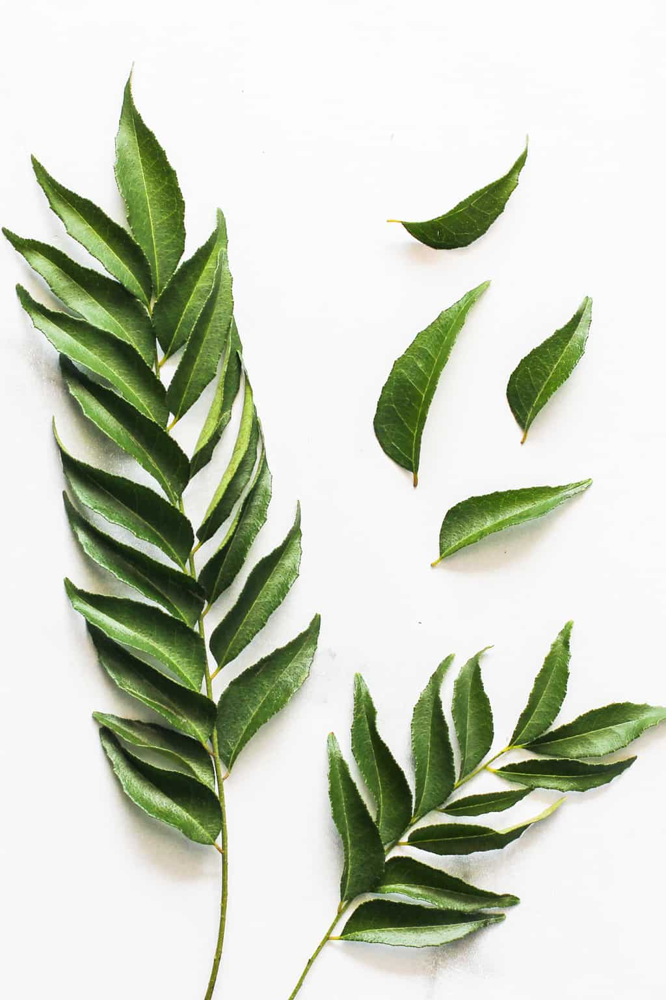
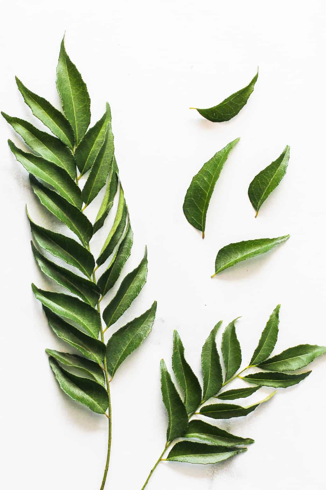
ENGLISH
1] Climate and Location:
Curry leaves thrive in tropical to subtropical climates.They prefer warm temperatures and can be grown outdoors in regions without frost.
2] Soil Preparation:
Curry leaves prefer well-drained, fertile soil.Amend the soil with organic matter, such as compost, to improve its structure and nutrient content.
3] Planting Curry Leaf Tree:
Curry leaf plants can be propagated from seeds or cuttings.Plant seeds or cuttings in well-prepared soil during the warm season.
4] Spacing:
Space multiple curry leaf plants at least 3 to 6 feet apart to allow for their growth.
5] Sunlight:
Curry leaf plants thrive in full sunlight but can tolerate partial shade.
6] Watering:
Keep the soil consistently moist, especially during dry periods.Once established, curry leaf plants are somewhat drought-tolerant.
7] Fertilization:
Fertilize curry leaf plants with a balanced fertilizer during the growing season.Use organic fertilizers to promote healthy growth.
8] Mulching:
Apply a layer of organic mulch around the base of the plant to retain moisture and suppress weeds.
9] Pruning:
Prune curry leaf plants regularly to maintain shape and encourage branching.Harvesting leaves also promotes bushy growth.
10] Harvesting Leaves:
Harvest curry leaves as needed once the plant is well-established.Use fresh leaves for culinary purposes.
ENGLISH
తెలుగు
1]వాతావరణం మరియు స్థానం:
కరివేపాకు ఉష్ణమండల నుండి ఉపఉష్ణమండల వాతావరణంలో వృద్ధి చెందుతుంది.
వారు వెచ్చని ఉష్ణోగ్రతలను ఇష్టపడతారు మరియు మంచు లేని ప్రాంతాలలో ఆరుబయట పెంచవచ్చు.
2]
నేల తయారీ:
కరివేపాకు బాగా ఎండిపోయిన, సారవంతమైన నేలను ఇష్టపడుతుంది.
దాని నిర్మాణం మరియు పోషక పదార్ధాలను మెరుగుపరచడానికి కంపోస్ట్ వంటి సేంద్రీయ పదార్థంతో మట్టిని సవరించండి.
3]
కరివేపాకు చెట్టు నాటడం:
కరివేపాకు మొక్కలను విత్తనాలు లేదా కోత నుండి ప్రచారం చేయవచ్చు.
వెచ్చని సీజన్లో బాగా తయారుచేసిన మట్టిలో విత్తనాలు లేదా కోతలను నాటండి.
4]
అంతరం:
బహుళ కరివేపాకు మొక్కలను వాటి పెరుగుదలకు వీలుగా కనీసం 3 నుండి 6 అడుగుల దూరంలో ఉంచండి.
5]
సూర్యకాంతి:
కరివేపాకు మొక్కలు పూర్తి సూర్యకాంతిలో వృద్ధి చెందుతాయి కానీ పాక్షిక నీడను తట్టుకోగలవు.
6]
నీరు త్రాగుట:
మట్టిని స్థిరంగా తేమగా ఉంచండి, ముఖ్యంగా పొడి కాలంలో.
ఒకసారి స్థాపించబడిన తర్వాత, కరివేపాకు మొక్కలు కొంతవరకు కరువును తట్టుకోగలవు.
7]
ఫలదీకరణం:
పెరుగుతున్న కాలంలో సమతుల్య ఎరువులతో కరివేపాకు మొక్కలను సారవంతం చేయండి.
ఆరోగ్యకరమైన పెరుగుదలను ప్రోత్సహించడానికి సేంద్రీయ ఎరువులు ఉపయోగించండి.
8]
మల్చింగ్:
తేమను నిలుపుకోవటానికి మరియు కలుపు మొక్కలను అణిచివేసేందుకు మొక్క యొక్క పునాది చుట్టూ సేంద్రీయ రక్షక
కవచం యొక్క పొరను వర్తించండి.
9]
కత్తిరింపు:
ఆకారాన్ని నిర్వహించడానికి మరియు కొమ్మలను ప్రోత్సహించడానికి కరివేపాకు మొక్కలను క్రమం తప్పకుండా
కత్తిరించండి.
ఆకులను కోయడం కూడా గుబురు పెరుగుదలను ప్రోత్సహిస్తుంది.
10]
ఆకులు కోయడం:
మొక్క బాగా స్థిరపడిన తర్వాత అవసరమైన మేరకు కరివేపాకును కోయండి.
పాక ప్రయోజనాల కోసం తాజా ఆకులను ఉపయోగించండి.
తెలుగు
వినండి
31.Fennal / 31.సోపు
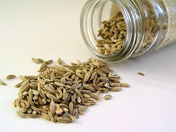

ENGLISH
1] Climate and Location:
Fennel is well-suited to grow in a variety of climates, but it prefers a mild, cool environment.It can be grown both as an annual and a perennial, depending on the local climate.
2] Soil Preparation:
Fennel prefers well-drained soil that is rich in organic matter.Work compost or well-rotted manure into the soil before planting.
3] Planting Fennel Seeds:
Fennel is typically grown from seeds, which can be directly sown in the garden.Sow seeds in the spring or fall, as fennel prefers cooler temperatures.
4] Spacing:
Space fennel plants about 12 to 18 inches apart to allow for their spreading growth.
5] Sunlight:
Fennel prefers full sunlight but can tolerate partial shade.
6] Watering:
Keep the soil consistently moist, especially during dry periods.Fennel has shallow roots, so regular watering is essential.
7] Fertilization:
Fertilize fennel with a balanced fertilizer at planting time and again during the growing season.
8] Mulching:
Apply a layer of mulch around the plants to retain moisture, suppress weeds, and regulate soil temperature.
9] Thinning:
Thin fennel seedlings to maintain proper spacing once they are a few inches tall.
10] Harvesting Bulbs and Seeds:
Harvest fennel bulbs when they reach a suitable size, typically 3 inches or larger in diameter.Harvest seeds when the flower heads turn brown and the seeds are fully developed.
ENGLISH
తెలుగు
1]వాతావరణం మరియు స్థానం:
ఫెన్నెల్ వివిధ వాతావరణాలలో పెరగడానికి బాగా సరిపోతుంది, అయితే ఇది తేలికపాటి, చల్లని వాతావరణాన్ని
ఇష్టపడుతుంది.
స్థానిక వాతావరణాన్ని బట్టి దీనిని వార్షికంగానూ, శాశ్వతంగానూ పెంచవచ్చు.
2]
నేల తయారీ:
ఫెన్నెల్ సేంద్రీయ పదార్థంతో కూడిన బాగా ఎండిపోయిన నేలను ఇష్టపడుతుంది.
నాటడానికి ముందు కంపోస్ట్ లేదా బాగా కుళ్ళిన ఎరువును మట్టిలో వేయండి.
3]
ఫెన్నెల్ విత్తనాలను నాటడం:
ఫెన్నెల్ సాధారణంగా విత్తనాల నుండి పెరుగుతుంది, దీనిని నేరుగా తోటలో నాటవచ్చు.
వసంత ఋతువులో లేదా శరదృతువులో విత్తనాలను విత్తండి, ఎందుకంటే ఫెన్నెల్ చల్లని ఉష్ణోగ్రతలను ఇష్టపడుతుంది.
4]
అంతరం:
ఫెన్నెల్ మొక్కలను వాటి వ్యాప్తికి వీలుగా 12 నుండి 18 అంగుళాల దూరంలో ఉంచండి.
5]
సూర్యకాంతి:
ఫెన్నెల్ పూర్తి సూర్యకాంతిని ఇష్టపడుతుంది కానీ పాక్షిక నీడను తట్టుకోగలదు.
6]
నీరు త్రాగుట:
మట్టిని స్థిరంగా తేమగా ఉంచండి, ముఖ్యంగా పొడి కాలంలో.
ఫెన్నెల్ నిస్సారమైన మూలాలను కలిగి ఉంటుంది, కాబట్టి క్రమం తప్పకుండా నీరు త్రాగుట అవసరం.
7]
ఫలదీకరణం:
పెంపకం సమయంలో మరియు పెరుగుతున్న కాలంలో మళ్లీ ఫెన్నెల్ను సమతుల్య ఎరువులతో ఫలదీకరణం చేయండి.
8]
మల్చింగ్:
తేమను నిలుపుకోవటానికి, కలుపు మొక్కలను అణిచివేసేందుకు మరియు నేల ఉష్ణోగ్రతను నియంత్రించడానికి మొక్కల
చుట్టూ రక్షక కవచం యొక్క పొరను వర్తించండి.
9]
సన్నబడటం:
సన్నని ఫెన్నెల్ మొలకల కొన్ని అంగుళాల పొడవు ఉన్నప్పుడు సరైన అంతరాన్ని నిర్వహించడానికి.
10]
గడ్డలు మరియు విత్తనాలను పండించడం:
ఫెన్నెల్ బల్బులు తగిన పరిమాణానికి చేరుకున్నప్పుడు, సాధారణంగా 3 అంగుళాలు లేదా పెద్ద వ్యాసం కలిగినప్పుడు
వాటిని కోయండి.
పువ్వుల తలలు గోధుమ రంగులోకి మారినప్పుడు మరియు విత్తనాలు పూర్తిగా అభివృద్ధి చెందినప్పుడు విత్తనాలను కోయండి.
తెలుగు
వినండి
32.Asafoetida / 32.ఇంగువ


ENGLISH
1] Climate and Location:
Asafoetida thrives in arid and mountainous regions with well-drained soil.It requires a dry, cool climate and is often grown in the Middle East and Central Asia.
2] Soil Preparation:
Asafoetida prefers well-drained, sandy or loamy soil with minimal organic matter.Ensure good drainage, as the plant is susceptible to root rot in waterlogged conditions.
3] Planting Asafoetida Seeds:
Asafoetida is typically grown from seeds.Sow seeds directly in the garden in the fall or early spring.
4] Spacing:
Space asafoetida plants about 3 to 4 feet apart to allow for their spreading growth.
5] Sunlight:
Asafoetida plants prefer full sunlight.
6] Watering:
Asafoetida is drought-tolerant and doesn't require frequent watering.Water sparingly, allowing the soil to dry out between watering.
7] Fertilization:
Asafoetida generally doesn't require heavy fertilization.Use a balanced fertilizer sparingly during the growing season.
8] Mulching:
Apply a thin layer of mulch around the plants to retain moisture and suppress weeds.
9] Harvesting Resin:
Asafoetida is harvested for its resinous gum, which is obtained from the thickened roots.Harvest the roots after the plant has reached maturity, usually after 4-5 years.
ENGLISH
తెలుగు
1]వాతావరణం మరియు స్థానం:
ఆసఫోటిడా బాగా ఎండిపోయిన నేలతో శుష్క మరియు పర్వత ప్రాంతాలలో వృద్ధి చెందుతుంది.
దీనికి పొడి, చల్లని వాతావరణం అవసరం మరియు తరచుగా మధ్యప్రాచ్యం మరియు మధ్య ఆసియాలో పెరుగుతుంది.
2]
నేల తయారీ:
ఆసఫోటిడా తక్కువ సేంద్రియ పదార్థంతో బాగా ఎండిపోయిన, ఇసుక లేదా లోమీ మట్టిని ఇష్టపడుతుంది.
మంచి నీటి పారుదల ఉండేలా చూసుకోండి, ఎందుకంటే నీరు నిలువలేని పరిస్థితుల్లో మొక్క వేరు కుళ్ళిపోయే అవకాశం ఉంది.
3]
ఇంగువ విత్తనాలు నాటడం:
ఆసఫోటిడా సాధారణంగా విత్తనాల నుండి పెరుగుతుంది.
పతనం లేదా వసంత ఋతువులో నేరుగా తోటలో విత్తనాలను విత్తండి.
4]
అంతరం:
3 నుండి 4 అడుగుల దూరంలో ఉన్న అంతరిక్ష ఆసఫోటిడా మొక్కలు వాటి విస్తరణకు వీలు కల్పిస్తాయి.
5]
సూర్యకాంతి:
ఆసుఫోటిడా మొక్కలు పూర్తి సూర్యకాంతిని ఇష్టపడతాయి.
6]
నీరు త్రాగుట:
ఆసుఫోటిడా కరువును తట్టుకుంటుంది మరియు తరచుగా నీరు త్రాగుట అవసరం లేదు.
పొదుపుగా నీరు పెట్టండి, నీరు త్రాగుట మధ్య నేల ఎండిపోయేలా చేస్తుంది.
7]
ఫలదీకరణం:
ఆసుఫోటిడాకు సాధారణంగా భారీ ఫలదీకరణం అవసరం లేదు.
పెరుగుతున్న కాలంలో సమతుల్య ఎరువులను తక్కువగా వాడండి.
8]
మల్చింగ్:
తేమను నిలుపుకోవటానికి మరియు కలుపు మొక్కలను అణిచివేసేందుకు మొక్కల చుట్టూ మల్చ్ యొక్క పలుచని పొరను
వర్తించండి.
9]
హార్వెస్టింగ్ రెసిన్:
ఆసఫోటిడా దాని రెసిన్ గమ్ కోసం పండించబడుతుంది, ఇది మందమైన మూలాల నుండి పొందబడుతుంది.
మొక్క పరిపక్వతకు చేరుకున్న తర్వాత, సాధారణంగా 4-5 సంవత్సరాల తర్వాత మూలాలను కోయండి.
తెలుగు
వినండి
33.Fenugreek / 33.


ENGLISH
1] Climate and Location:
Fenugreek thrives in regions with a temperate climate.It can be grown as an annual in colder climates or as a perennial in warmer regions.
2] Soil Preparation:
Fenugreek prefers well-drained, loamy soil with good fertility.Prepare the soil by adding organic matter, such as compost.
3] Planting Fenugreek Seeds:
Fenugreek is typically grown from seeds, which can be directly sown in the garden.Sow seeds in the spring or fall, depending on the local climate.
4] Spacing:
Space fenugreek plants about 6 to 12 inches apart.
5] Sunlight:
Fenugreek prefers full sunlight but can tolerate partial shade.
6] Watering:
Keep the soil consistently moist, especially during dry periods.Water at the base of the plants to avoid wetting the foliage.
7] Fertilization:
Fenugreek generally doesn't require heavy fertilization.A balanced fertilizer applied at planting time can be sufficient.
8] Mulching:
Apply a layer of mulch around the plants to retain moisture and suppress weeds.
9] Harvesting Leaves:
Harvest fenugreek leaves once the plants have reached a suitable height.Use fresh leaves in culinary dishes, particularly in Indian cuisine.
ENGLISH
తెలుగు
1]వాతావరణం మరియు స్థానం:
మెంతులు సమశీతోష్ణ వాతావరణం ఉన్న ప్రాంతాల్లో వృద్ధి చెందుతాయి.
ఇది చల్లని వాతావరణంలో వార్షికంగా లేదా వెచ్చని ప్రాంతాల్లో శాశ్వతంగా పెంచవచ్చు.
2]
నేల తయారీ:
మెంతులు బాగా ఎండిపోయిన, మంచి సంతానోత్పత్తితో కూడిన లోమీ నేలను ఇష్టపడతాయి.
కంపోస్ట్ వంటి సేంద్రీయ పదార్థాలను జోడించడం ద్వారా నేలను సిద్ధం చేయండి.
3]
మెంతి గింజలు నాటడం:
మెంతులు సాధారణంగా విత్తనాల నుండి పండిస్తారు, దీనిని నేరుగా తోటలో నాటవచ్చు.
స్థానిక వాతావరణాన్ని బట్టి వసంత లేదా శరదృతువులో విత్తనాలను విత్తండి.
4]
అంతరం:
మెంతి మొక్కలను 6 నుండి 12 అంగుళాల దూరంలో ఉంచండి.
5]
సూర్యకాంతి:
మెంతులు పూర్తి సూర్యకాంతిని ఇష్టపడతాయి కానీ పాక్షిక నీడను తట్టుకోగలవు.
6]
నీరు త్రాగుట:
మట్టిని స్థిరంగా తేమగా ఉంచండి, ముఖ్యంగా పొడి కాలంలో.
ఆకులను తడి చేయకుండా ఉండటానికి మొక్కల అడుగున నీరు పెట్టండి.
7]
ఫలదీకరణం:
మెంతులు సాధారణంగా భారీ ఫలదీకరణం అవసరం లేదు.
నాటడం సమయంలో సమతుల ఎరువులు వేస్తే సరిపోతుంది.
8]
మల్చింగ్:
తేమను నిలుపుకోవటానికి మరియు కలుపు మొక్కలను అణిచివేసేందుకు మొక్కల చుట్టూ రక్షక కవచాన్ని వేయండి.
9]
ఆకులు కోయడం:
మొక్కలు తగిన ఎత్తుకు చేరుకున్న తర్వాత మెంతి ఆకులను కోయండి.
పాక వంటకాలలో, ముఖ్యంగా భారతీయ వంటకాలలో తాజా ఆకులను ఉపయోగించండి.
తెలుగు
వినండి
34.Ginger / 34.అల్లం
 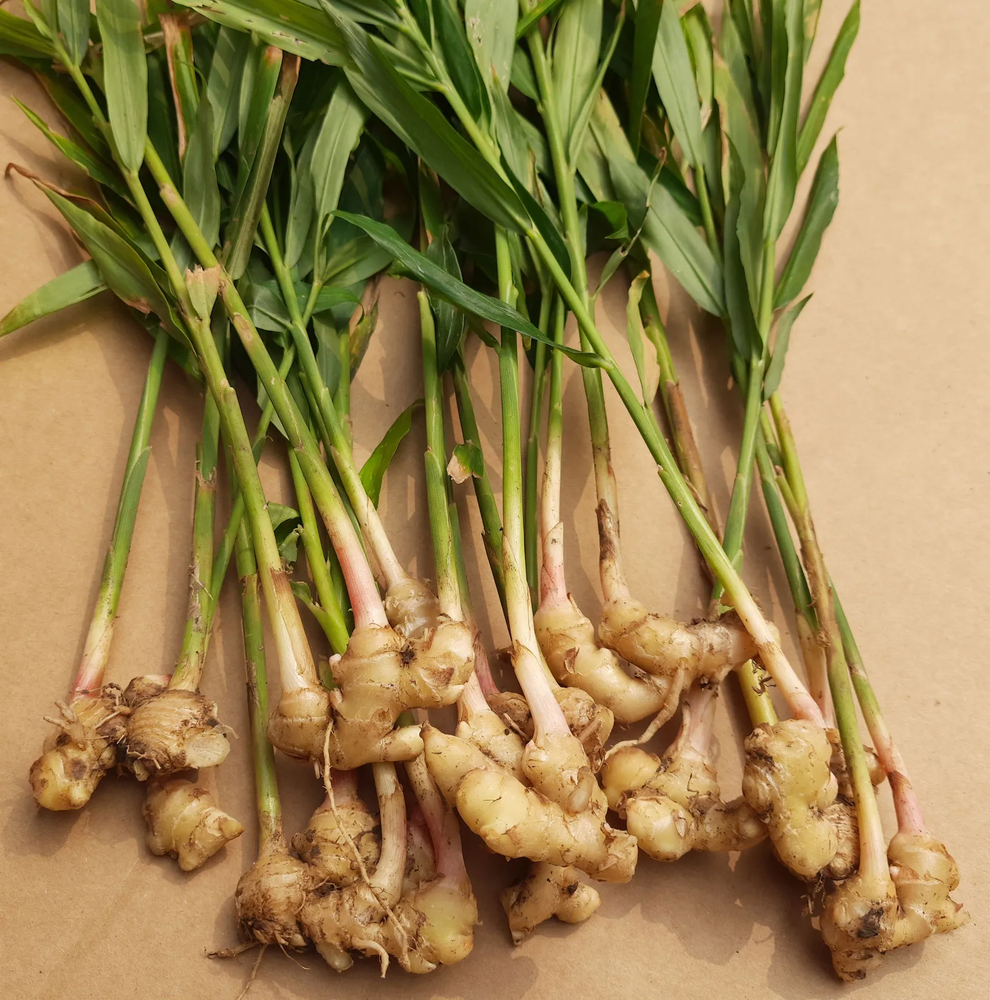
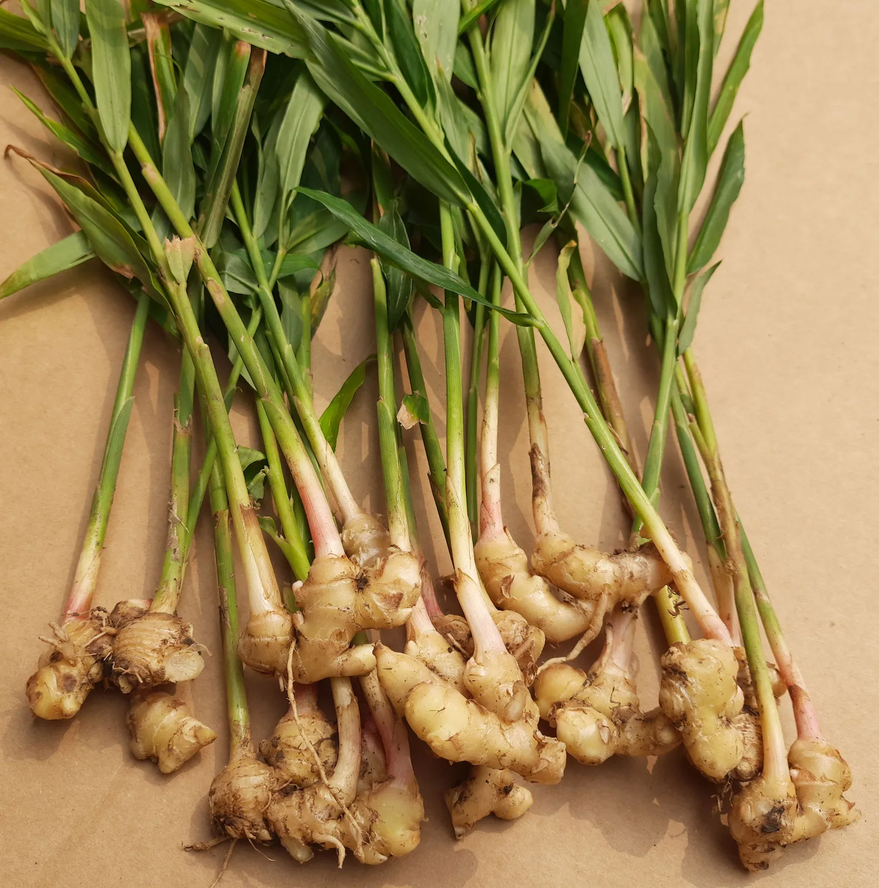
ENGLISH
1] Climate and Location:
Ginger thrives in tropical and subtropical climates.It can be grown in containers in colder climates and brought indoors during the winter.
2] Selecting Ginger Rhizomes:
Purchase fresh and plump ginger rhizomes from a reliable source.Choose rhizomes with well-developed "eyes" or buds.
3] Soil Preparation:
Use well-draining, loose, and rich soil.Amend the soil with compost to improve fertility.
4] Planting Ginger Rhizomes:
Plant ginger rhizomes with the buds facing upward.Plant them about 2 to 4 inches deep in the soil.
5] Spacing:
Space ginger plants about 8 to 12 inches apart to allow for their spreading growth.
6] Sunlight:
Ginger prefers partial shade.If growing in containers, place them in a location with filtered sunlight.
7] Watering:
Keep the soil consistently moist, especially during the growing season.Ginger requires regular watering, but avoid waterlogging.
8] Fertilization:
Fertilize ginger with a balanced, all-purpose fertilizer during the growing season.Apply fertilizer sparingly to avoid over-fertilization.
9] Mulching:
Apply a layer of organic mulch around the plants to retain moisture and suppress weeds.
10] Harvesting Ginger:
Ginger can be harvested when the plant is about 8-10 months old.Dig up the entire plant and carefully remove the rhizomes.
ENGLISH
తెలుగు
1]వాతావరణం మరియు స్థానం:
అల్లం ఉష్ణమండల మరియు ఉపఉష్ణమండల వాతావరణంలో వృద్ధి చెందుతుంది.
దీనిని చల్లని వాతావరణంలో కంటైనర్లలో పెంచవచ్చు మరియు చలికాలంలో ఇంట్లోకి తీసుకురావచ్చు.
2]
అల్లం రైజోమ్లను ఎంచుకోవడం:
విశ్వసనీయ మూలం నుండి తాజా మరియు బొద్దుగా ఉండే అల్లం రైజోమ్లను కొనుగోలు చేయండి.
బాగా అభివృద్ధి చెందిన "కళ్ళు" లేదా మొగ్గలు ఉన్న రైజోమ్లను ఎంచుకోండి.
3]
నేల తయారీ:
బాగా ఎండిపోయే, వదులుగా మరియు సమృద్ధిగా ఉండే మట్టిని ఉపయోగించండి.
సంతానోత్పత్తిని మెరుగుపరచడానికి కంపోస్ట్తో మట్టిని సవరించండి.
4]
అల్లం రైజోమ్లను నాటడం:
మొగ్గలు పైకి ఎదురుగా ఉండేలా అల్లం రైజోమ్లను నాటండి.
వాటిని మట్టిలో 2 నుండి 4 అంగుళాల లోతు వరకు నాటండి.
5]
అంతరం:
అల్లం మొక్కలను వాటి వ్యాప్తికి వీలుగా 8 నుండి 12 అంగుళాల దూరంలో ఉంచండి.
6]
సూర్యకాంతి:
అల్లం పాక్షిక నీడను ఇష్టపడుతుంది.
కంటైనర్లలో పెరుగుతున్నట్లయితే, వాటిని ఫిల్టర్ చేసిన సూర్యకాంతి ఉన్న ప్రదేశంలో ఉంచండి.
7]
నీరు త్రాగుట:
ముఖ్యంగా పెరుగుతున్న కాలంలో మట్టిని నిరంతరం తేమగా ఉంచండి.
అల్లం రెగ్యులర్ నీరు త్రాగుటకు లేక అవసరం, కానీ నీటి ఎద్దడి నివారించేందుకు.
8]
ఫలదీకరణం:
పెరుగుతున్న కాలంలో సమతుల్య, అన్ని-ప్రయోజన ఎరువులతో అల్లం ఫలదీకరణం చేయండి.
అధిక ఫలదీకరణాన్ని నివారించడానికి ఎరువులను తక్కువగా వర్తించండి.
9]
మల్చింగ్:
తేమను నిలుపుకోవటానికి మరియు కలుపు మొక్కలను అణిచివేసేందుకు మొక్కల చుట్టూ సేంద్రీయ రక్షక కవచం యొక్క
పొరను
వర్తించండి.
10]
అల్లం పండించడం:
మొక్క 8-10 నెలల వయస్సులో ఉన్నప్పుడు అల్లం పండించవచ్చు.
మొత్తం మొక్కను త్రవ్వి, రైజోమ్లను జాగ్రత్తగా తొలగించండి.
తెలుగు
వినండి
35.Bay Leaf / 35.బే ఆకు


ENGLISH
1] Climate and Location:
Bay leaf plants thrive in a Mediterranean climate.They can be grown in containers and brought indoors in colder climates.
2] Selecting Bay Leaf Plants:
Purchase a young bay laurel plant from a reputable nursery.Choose a healthy plant with vibrant green leaves.
3] Soil Preparation:
Bay leaf plants prefer well-draining soil.Use a mixture of potting soil and perlite if growing in containers.
4] Planting Bay Leaf:
If planting in the ground, dig a hole that is as deep as the root ball and twice as wide.If growing in a container, choose a large pot with drainage holes.
5] Spacing:
If planting multiple bay leaf plants, space them about 4 to 6 feet apart.
6] Sunlight:
Bay leaf plants prefer full sunlight but can tolerate partial shade.
7] Watering:
Keep the soil consistently moist, especially during dry periods.Bay leaf plants prefer slightly moist soil.
8] Fertilization:
Fertilize bay leaf plants with a balanced, slow-release fertilizer in the spring.Avoid over-fertilizing, as bay leaf plants prefer lean soil.
9] Mulching:
Apply a layer of organic mulch around the base of the plant to retain moisture and suppress weeds.
10] Pruning:
Prune bay leaf plants to shape them and remove dead or damaged branches.Harvest leaves regularly to encourage bushy growth.
11] Harvesting Bay Leaves:
Bay leaves can be harvested once the plant is mature, typically after a couple of years.Harvest leaves as needed for culinary use.
ENGLISH
తెలుగు
1]వాతావరణం మరియు స్థానం:
బే ఆకు మొక్కలు మధ్యధరా వాతావరణంలో వృద్ధి చెందుతాయి.
వాటిని కంటైనర్లలో పెంచవచ్చు మరియు చల్లని వాతావరణంలో ఇంట్లోకి తీసుకురావచ్చు.
2]
బే ఆకు మొక్కలను ఎంచుకోవడం:
ప్రసిద్ధ నర్సరీ నుండి యువ బే లారెల్ మొక్కను కొనుగోలు చేయండి.
శక్తివంతమైన ఆకుపచ్చ ఆకులతో ఆరోగ్యకరమైన మొక్కను ఎంచుకోండి.
3]
నేల తయారీ:
బే ఆకు మొక్కలు బాగా ఎండిపోయే మట్టిని ఇష్టపడతాయి.
కంటైనర్లలో పెరుగుతున్నట్లయితే పాటింగ్ మట్టి మరియు పెర్లైట్ మిశ్రమాన్ని ఉపయోగించండి.
4]
బే ఆకు నాటడం:
భూమిలో నాటినట్లయితే, రూట్ బాల్ అంత లోతుగా మరియు రెండు రెట్లు వెడల్పు ఉన్న రంధ్రం తవ్వండి.
ఒక కంటైనర్లో పెరుగుతున్నట్లయితే, డ్రైనేజీ రంధ్రాలతో పెద్ద కుండను ఎంచుకోండి.
5]
అంతరం:
అనేక బే లీఫ్ మొక్కలను నాటినట్లయితే, వాటిని 4 నుండి 6 అడుగుల దూరంలో ఉంచండి.
6]
సూర్యకాంతి:
బే ఆకు మొక్కలు పూర్తి సూర్యకాంతిని ఇష్టపడతాయి కానీ పాక్షిక నీడను తట్టుకోగలవు.
7]
నీరు త్రాగుట:
మట్టిని స్థిరంగా తేమగా ఉంచండి, ముఖ్యంగా పొడి కాలంలో.
బే ఆకు మొక్కలు కొద్దిగా తేమతో కూడిన మట్టిని ఇష్టపడతాయి.
8]
ఫలదీకరణం:
వసంతకాలంలో సమతుల్య, నెమ్మదిగా విడుదల చేసే ఎరువులతో బే ఆకు మొక్కలను సారవంతం చేయండి.
బే ఆకు మొక్కలు లీన్ మట్టిని ఇష్టపడతాయి కాబట్టి, అధికంగా ఫలదీకరణం చేయవద్దు.
9]
మల్చింగ్:
తేమను నిలుపుకోవటానికి మరియు కలుపు మొక్కలను అణిచివేసేందుకు మొక్క యొక్క పునాది చుట్టూ సేంద్రీయ రక్షక
కవచం యొక్క
పొరను వర్తించండి.
10]
కత్తిరింపు:
వాటిని ఆకృతి చేయడానికి మరియు చనిపోయిన లేదా దెబ్బతిన్న కొమ్మలను తొలగించడానికి బే ఆకు మొక్కలను
కత్తిరించండి.
గుబురు పెరుగుదలను ప్రోత్సహించడానికి క్రమం తప్పకుండా ఆకులను కోయండి.
11]
బే ఆకులను కోయడం:
మొక్క పక్వానికి వచ్చిన తర్వాత, సాధారణంగా కొన్ని సంవత్సరాల తర్వాత బే ఆకులను కోయవచ్చు.
పాక ఉపయోగం కోసం అవసరమైన విధంగా ఆకులను కోయండి.
తెలుగు
వినండి
36.Garlic / 36.వెల్లుల్లి
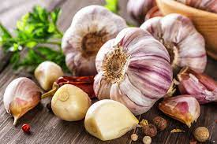
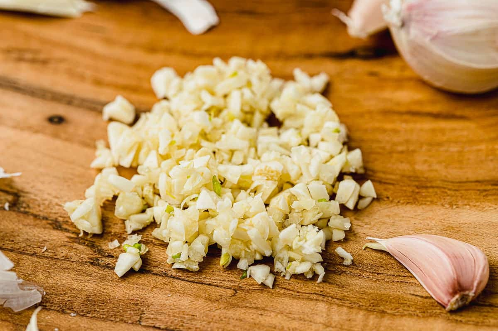
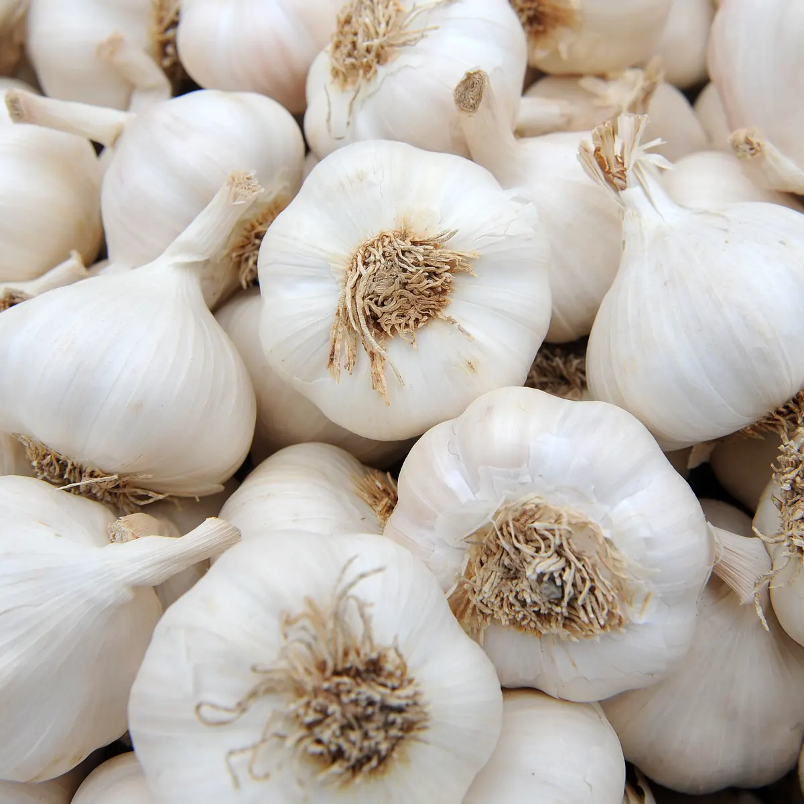
ENGLISH
1] Climate and Location:
Garlic prefers a cool climate and is typically planted in the fall for a summer harvest.It can be grown in both temperate and subtropical regions.
2] Selecting Garlic Bulbs:
Purchase high-quality, disease-free garlic bulbs from a reputable source.Choose varieties suited to your climate.
3] Soil Preparation:
Garlic prefers well-draining soil with good fertility.Add compost or well-rotted manure to the soil before planting.
4] Planting Garlic Bulbs:
Break the garlic bulb into individual cloves, leaving the papery skin intact.Plant each clove about 2 inches deep and 4 to 6 inches apart.Space rows about 12 inches apart.
5] Sunlight:
Garlic requires full sunlight for optimal growth.
6] Watering:
Keep the soil consistently moist, especially during dry periods.Reduce watering as the garlic plants approach maturity to prevent rot.
7] Fertilization:
Fertilize garlic with a balanced, all-purpose fertilizer at planting time.Side-dress with additional fertilizer in early spring.
8] Mulching:
Apply a layer of organic mulch, such as straw, around the garlic plants to conserve moisture and suppress weeds.
9] Scapes Removal:
Garlic plants produce scapes, which are curly flower stalks.Removing them encourages bulb development.Harvest scapes for culinary use.
10] Harvesting Garlic:
Garlic bulbs are typically ready for harvest in late spring or early summer.Harvest when the lower leaves turn brown and the bulbs are well-formed.Carefully dig up the bulbs, being cautious not to damage them.
ENGLISH
తెలుగు
1]వాతావరణం మరియు స్థానం:
వెల్లుల్లి చల్లని వాతావరణాన్ని ఇష్టపడుతుంది మరియు సాధారణంగా వేసవి పంట కోసం పతనంలో పండిస్తారు.
దీనిని సమశీతోష్ణ మరియు ఉపఉష్ణమండల ప్రాంతాలలో పెంచవచ్చు.
2]
వెల్లుల్లి గడ్డలు ఎంచుకోవడం:
ప్రసిద్ధ మూలం నుండి అధిక-నాణ్యత, వ్యాధి-రహిత వెల్లుల్లి బల్బులను కొనుగోలు చేయండి.
మీ వాతావరణానికి సరిపోయే రకాలను ఎంచుకోండి.
3]
నేల తయారీ:
వెల్లుల్లి మంచి సంతానోత్పత్తితో బాగా ఎండిపోయే మట్టిని ఇష్టపడుతుంది.
నాటడానికి ముందు మట్టికి కంపోస్ట్ లేదా బాగా కుళ్ళిన ఎరువును జోడించండి.
4]
వెల్లుల్లి గడ్డలు నాటడం:
వెల్లుల్లి బల్బును వ్యక్తిగత లవంగాలుగా విడదీయండి, కాగితపు చర్మాన్ని చెక్కుచెదరకుండా ఉంచండి.
ప్రతి లవంగాన్ని 2 అంగుళాల లోతు మరియు 4 నుండి 6 అంగుళాల దూరంలో నాటండి.
ఖాళీ వరుసలు దాదాపు 12 అంగుళాల దూరంలో ఉన్నాయి.
5]
సూర్యకాంతి:
వెల్లుల్లి సరైన పెరుగుదలకు పూర్తి సూర్యకాంతి అవసరం.
6]
నీరు త్రాగుట:
మట్టిని స్థిరంగా తేమగా ఉంచండి, ముఖ్యంగా పొడి కాలంలో.
కుళ్ళిపోకుండా ఉండేందుకు వెల్లుల్లి మొక్కలు పరిపక్వ దశకు చేరుకున్నప్పుడు నీరు త్రాగుట తగ్గించండి.
7]
ఫలదీకరణం:
నాటడం సమయంలో సమతుల్య, అన్ని ప్రయోజన ఎరువులతో వెల్లుల్లిని సారవంతం చేయండి.
వసంత ఋతువులో అదనపు ఎరువులతో సైడ్-డ్రెస్.
8]
మల్చింగ్:
తేమను సంరక్షించడానికి మరియు కలుపు మొక్కలను అణిచివేసేందుకు వెల్లుల్లి మొక్కల చుట్టూ గడ్డి వంటి సేంద్రీయ రక్షక
కవచం యొక్క పొరను వర్తించండి.
9]
స్కేప్స్ తొలగింపు:
వెల్లుల్లి మొక్కలు స్కేప్లను ఉత్పత్తి చేస్తాయి, అవి గిరజాల పూల కాండాలు.వాటిని తొలగించడం బల్బ్ అభివృద్ధిని
ప్రోత్సహిస్తుంది.
పాక ఉపయోగం కోసం హార్వెస్ట్ స్కేప్స్.
10]
వెల్లుల్లి హార్వెస్టింగ్:
వెల్లుల్లి గడ్డలు సాధారణంగా వసంత ఋతువు చివరిలో లేదా వేసవి ప్రారంభంలో కోతకు సిద్ధంగా ఉంటాయి.
దిగువ ఆకులు గోధుమ రంగులోకి మారినప్పుడు మరియు గడ్డలు బాగా ఏర్పడినప్పుడు హార్వెస్ట్ చేయండి.
బల్బులను జాగ్రత్తగా తవ్వండి, వాటిని పాడుచేయకుండా జాగ్రత్త వహించండి.
తెలుగు
వినండి
37.Cloves / 37.లవంగాలు